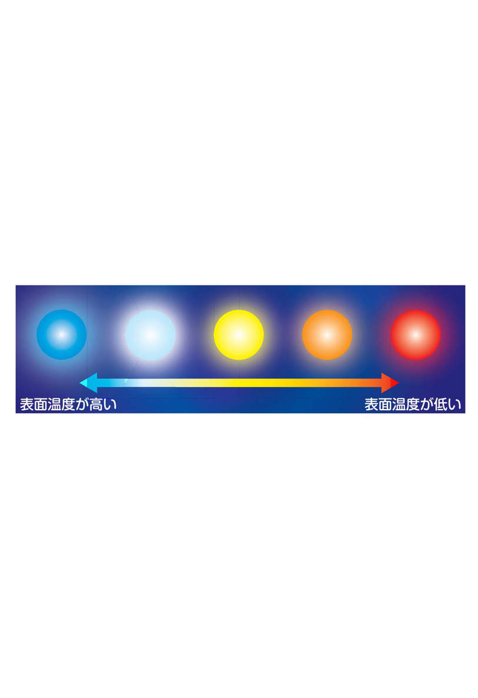
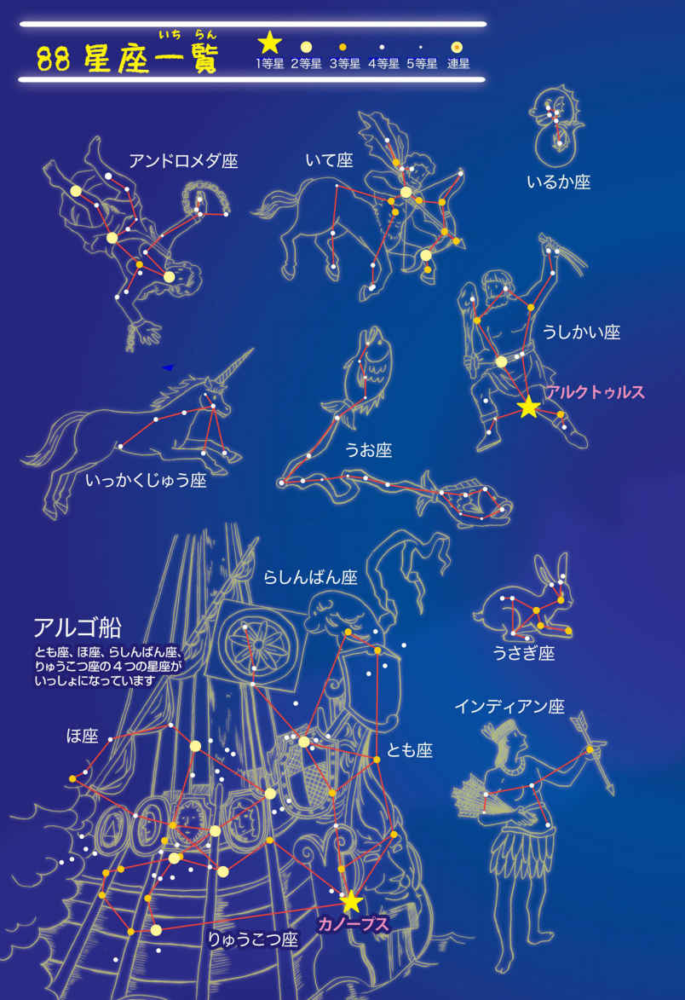

🏠
日
月
縦書き／横書き


| 親子で読みたい！ 知りたい！ 学びたい！ 星と星座のふしぎ | |
| 荒舩良孝 | |
| (2015) | |
荒舩良孝 星 星座 天体観測 天体 ふしぎ プラネタリウム 星空 ギリシャ神話 彗星 流れ星 知的好奇心 探求心 夜空 宇宙
親子で読みたい！ 知りたい！ 学びたい！ 星と星座のふしぎ
荒舩良孝
親子で読みたい！ 知りたい！ 学びたい！ 星と星座のふしぎ
「どこで」「どのように」星は生まれたの？
ホント!?......星にも人間と同じように寿命がある
広い宇宙には、どれくらいの星がある？
星って、いったいどんな動きをするのかな？
ウソでしょ!?「北極星」の真実。ずっと同じではなかった
昔の人たちにとって、星は大切な情報源!!
地球からそれぞれの星までの距離の出し方は？
今、見ている星の光。じつは......はるか昔のもの
どうして？ なんで？ 星は光ることができるの？
太陽よりも重い星――。最期はどうなる？
明るさの決め方には、なにか基準があるのかな？
ズバリ!! 一番明るい星はなんだ!!
明るさを変える星があるって、本当ですか!?
「彗星」の正体は、ちょっと意外なものでした
「彗星」は、どこからやってくるのだろう
ふしぎでたまらない!!「彗星」の尾の正体とは？
「彗星」と「流れ星」は、まったく別のもの！
地球をふくめた「惑星」にぶつかる可能性は......!?
「流れ星」と「いん石」。じつは違うものだった
星座の「数」「名前」は、どうやって決まったの？
とても古い星座だった!?「星うらない」の12星座
最初はもっと少なかった。星座の「数」の歴史
じつは誕生日に自分の星座は見えない
地球からもっとも近い星はなんだろう
星の名前をつけたい!! どんなルールがあるの？
北半球と南半球では、星の見え方が違う!?
「南十字星」には〈ニセモノ〉があるらしい？
星空を優雅に流れる「天の川」の正体
よく聞く「星雲」って、いったいなんですか？
知りたい！ 教えて！「星団」と「銀河」の違い
日本ではどこ？ 星がキレイに見える場所
装丁
福田和雄（FUKUDA DESIGN）
イラスト・図版
四月屋／藤本いづみ
本文レイアウト
藤本いづみ
はじめに
「星は、どこで、どのように生まれたのだろう？」
「星座の数や名前は、どうやって決まったのかな？」
どこまでも続く夜空を見上げ、キラめく星たちをながめていると、いつもは気にもとめなかったことが、ふと「ふしぎ」に思えてきて、次々と疑問が浮かんできます。
子どものころは、その答えがどうしても知りたくて、お父さんやお母さん、学校の先生から聞き出そうとした記憶が、だれにでもあるのではないでしょうか。
「ふしぎ」と思うことは、「知りたい」という〈好奇心〉の芽ばえです。
きっと、わたしたちは年齢をかさねていくうちに、いろいろな知識や情報を得ることで、「ふしぎ」に思うこと、そして「知りたい」と思うことの大切さやすばらしさを、どこかに置きわすれてしまっているのでしょう。
でも......子どもは正直です。自分が知らないことを「知りたい」と、ストレートにぶつけてきます。学校の勉強はあまり好きではない子どもでも、「ふしぎ」に思うことを「知りたい」という気持ちは、ちゃんと持っています。
この本では、星と星座にまつわる「ふしぎ」をいくつか取り上げて、その答えを解説しています。小学生の子どもでも読めるように、ちょっとむずかしい用語や言葉には、ふりがなをふりました。また、ワクワク楽しみながら読んでもらうために、可愛いイラストや図版をたくさん盛りこんでいます。
もともと星や星座が大好きだった人も、子どもに質問されたら得意気に答えたいと考えているお父さんやお母さんも、プラネタリウムのデートをすてきな時間にしたいとねがうカップルも、ぜひ、この本を手にしてみてください。
みなさんのなかに眠っている好奇心が、よびさまされるはずです。
さぁ、星と星座のふしぎに触れる楽しい時間が、いよいよはじまります。
荒舩良孝
１限目
「星」にまつわるふしぎ
ふしぎ01「どこで」「どのように」星は生まれたの？
ふつうレベル★★
◆夜空にキラめく無数の星も太陽と同じ「恒星」
わたしたちが住む地球から見える大空は、その姿を刻々と変えています。太陽の光が強い昼間の空には、白い雲くらいしか見ることはできませんが、だんだんと夜が近づくにつれて、無数の星たちがあちらこちらに姿を現します。
星は地球上から見ると、夜空の大きなキャンパスについた点のようにしか見えません。これは地球から遠く離れているからです。
そうした１つひとつの星の正体は、太陽と同じ「恒星」です。恒星とは、自分で光を放ち輝いている天体のことを指します。
一方、地球のようにみずから光り輝くことができず、恒星の周りを回っている天体が「惑星」です。この惑星を周回している天体のことを「衛星」とよび、月はこれにあたります。
ところで、太陽や星といった恒星は「どこで」「どのように」して生まれたのでしょうか。
◆今、この瞬間も「星雲」のなかで星が生まれている!?
宇宙空間をただようガスやちりなどを「星間物質」とよびます。そして、この星間物質が、宇宙空間でたくさん集まっている場所が「星雲」です。
星雲は、ほかの場所よりも密度が大きくなっています。また、星雲は宇宙空間にたくさん存在しており、そこでは今、この瞬間も、新しい恒星が誕生しているのです。
なお、星雲については、５限目でお話しします。
ここからは、恒星が誕生するまでの流れを見ていきましょう。
まず、宇宙空間をただよう星間物質が、１つの場所に集まってきます。星間物質の密度が大きな場所は、ほかの場所に比べて重力が強くなります。強い重力に引きよせられるように、周囲をただよう星間物質が集まり、密度がさらに大きくなっていきます。
そうして星雲のなかに、特に密度が大きい〈ガスのかたまり〉ができるのです。
このガスのかたまりは、周りにあるガスをどんどん中心部分に引っぱりこんでいきます。その後、中心部分へと引きよせられたガスのエネルギーによって光るようになります。
これが「原始星」という状態で、人間では産まれてまもない赤ちゃんといえるでしょう。
やがて原始星の周りのガスは回転しはじめ、ガス円盤をつくっていき、「ガス円盤→原始星」へと、ガスがさらに集まっていきます。このときガスの一部が〈ジェット〉としてふき出すようになります。
原始星が成長していくと、周りのガスはなくなり、ジェットもおさまっていきます。
その後、原始星は自身の重みで収縮していき、中心部分の温度や密度がさらに大きくなり、圧力も増します。そして、温度と圧力が「臨界点」を超えると、中心部分で押しつぶされていた水素原子が核融合反応を起こし、明るく輝く恒星が誕生するのです。
じつは地球からも、恒星が生まれる場所を見ることができます。
たとえば、夏の夜に淡い雲のように見える「天の川」を、望遠鏡でよく観察してみてください。ところどころに暗く見える部分があることに気がつくでしょう。
その部分が、銀河系のなかで新たな星がもうすぐ生まれそうな場所です。
ほかにも、冬の代表的な星座である「オリオン座」のなかに「オリオン座大星雲」といった有名な星雲があります。この大星雲を倍率の高い望遠鏡でのぞいてみると、原始星や生まれたばかりの星をたくさん見つけることができるでしょう。
ふしぎ02 ホント!?......星にも人間と同じように寿命がある
ふつうレベル★★
◆水素原子を使いきってしまうと死がおとずれる
すべてのものには「はじまりがあれば、終わりもある」──。
これは星も例外ではありません。
星にも誕生と終焉があって、その間の時間が〈寿命〉となります。
もっとも星の寿命は、わたしたち人間の寿命に比べると、はるかに長いです。そのため、「星は永遠に輝き続けているもの」と思いがちですが、星にも命に限りがあります。
星の寿命を決めるものはなんなのでしょうか。
それは「星の質量の大きさ」......つまりは「重さ」です。
ふしぎ01で、星（恒星）が明るく光り輝けるのは、「中心部分で核融合反応が起こっているから」とお話ししました。このとき核融合の燃料となるのが、星の内部にたくさんある水素原子です。
基本的に、星は自身が持っている水素原子を使って、核融合反応を起こしていき、それを使いきってしまうと、死を迎えます。
◆「質量が小さい星」のほうが、じつは長生きします
ところで、寿命が長いのは、重い星と軽い星のどちらだと思いますか？
重い星のほうが、燃料となる水素原子をたくさん持っているから長生きしそうですか？
じつは重い星のほうが、寿命は短いのです。たしかに、重い星は水素原子をたくさん持っていますが、そのぶん中心部分への圧力も大きくなります。圧力が大きいと、中心部分の温度が上昇して、核融合反応も速く進んでしまうのです。つまり、たくさんの燃料を一気に使うことで、明るく光り輝くことはできても、寿命は短くなるわけです。
一方、軽い星は水素原子が少ないぶん、中心部分への圧力も小さいため、核融合反応もゆっくりと進みます。星の輝きは暗めですが、寿命は長くなります。
星の寿命と質量の関係を整理すると、「星の寿命は星の質量の２乗～３乗に反比例する」といわれています。同じ恒星の太陽の寿命は「約100億年」だと考えられているので、その質量を基準に「質量の３乗に反比例する」と仮定して、星の寿命を計算すると......。
たとえば、太陽の10倍の質量の星は寿命が「約1000万年」しかないのに対し、太陽の半分くらいの質量の星だと、寿命は「約800億年」にもなるそうです。
ふしぎ03 広い宇宙には、どれくらいの星がある？
やさしいレベル★
◆地上から見える星の数は、宇宙全体のほんの一部
最近は、夜でもたくさんのあかりやネオンが灯るようになったので、夜空を見上げても、星があまり見えなくなってしまいました。
わたしたちが満天の星空に出会うには、山や高原、海辺や河原、大きな公園や学校のグラウンドなど、周りの環境に左右されず、空気が乾燥して澄んでいる、空が暗い場所に行く必要があるでしょう。
ちなみに理論的には、地上からわたしたちの肉眼（人間の目）で見られる星の数は、空全体（全天）で「約8600個」だそうです。
ただし、地平線で北半球の空（北天）と、南半球の空（南天）に区切られるため、日本列島が位置する北半球で見ることができる数は、せいぜい「4000個」くらいでしょう。
高性能の望遠鏡を使えば、地上から見える星の数は一気に増えて、「700兆個の１億倍」という途方もない数になるといいます。
2022年には、アメリカのハワイ島に世界最大の口径30ｍの鏡を持つ超巨大な望遠鏡ＴＭＴ（Thirty Meter Telescope）が完成する予定です。それを使えば、観測できる星の数はさらに増えることでしょう。ただ、それでもわたしたちが、地上から見ることができる星の数は、宇宙全体にあるほんの一部にしかすぎません。
◆宇宙にあるすべての星の数は......まだわかっていない!!
わたしたちが暮らす地球がある太陽系をふくめた銀河系には、「約2000億個」の星があるそうです。宇宙全体では「1000億～１兆個の銀河が存在している」と見積もられています。宇宙空間に存在する銀河は、大きいものもあれば、小さいものもあり、その大小によって存在する星の数も変わってきます。
ただし、平均すると、銀河１つあたりの星の数は「約100億個」になるそうです。
これをもとにして、宇宙全体にある星の数を見積もると、「1000億個×100億個」の星が少なくとも存在することになります。ただ、あくまでもこの数はおおざっぱなものです。残念ながら、今の地球には、まだ正確な数を導き出す〈手段〉がありません。
まさしく「星の数ほどある」としかいいようがないのです。
ふしぎ04 星って、いったいどんな動きをするのかな？
ふつうレベル★★
◆地球の「自転」が１日の星の動きに影響している
はてしない大空をながめていると、太陽や月も、そして星も、東からのぼり、やがて西へとしずんでいきます。地球はじっと動かずに、まるで天体のほうが動いているようにも見えるでしょう。
事実、昔の人たちは、「地球を中心に、その周りを天体が回っているのだ」と信じていました。これが「天動説」です。
その後、天文学者のコペルニクス（1473～1543）が唱えた「地動説」によって、「地球が太陽の周りを回っている」ことが明らかになります。つまり、実際に動いているのは、地球だったのです。
地球は、北極点と南極点をむすんだ直線（地軸）を中心に、地球自身が〈コマ〉のように１日（＝約24時間）かけて、「西→東」へ１回転（＝360度）します。これを「自転」といいます。１日のなかで、天体が動いて見えるのは、地球がこの運動をしているからです。
地球の自転にあわせて、星は１時間に約15度ずつ、地球の自転とは反対方向（東の空 → 南の空 → 西の空）へ移動しているように見えます。
このような星の動きを「星の日周運動」といいます。
北の空の星も１時間に約15度ずつ動いていますが、ほかの方角に見える星とは違い、動く範囲がせまいです。現在は、地軸の延長線上に「北極星」が位置しているので、それを中心に円をえがくように「反時計回り」で回転する姿を見ることができるでしょう。
◆地球の「公転」によって、星の位置にも変化が!?
ところで毎夜、同じ時間に、同じ場所で天体観測をしていると、おかしなことに気がつくはずです。季節によって、同じ星（星座）が見える位置に違いがあると......。
たとえば、冬の代表的な星座の「オリオン座」は、真冬は東の空に見えるのに、春になると西の空に見えます。これには地球のある運動が深くかかわっています。
それは地球の「公転」です。地球は、地軸をつねに約23.4度かたむけた状態で、太陽の周りを１年かけて１周します。この運動によって、見える星の位置も１年かけて変化し、１カ月に約30度ずつ「東→南→西」へと移動していきます。この変化で、１日で約４分ずつ、１カ月で約２時間ずつズレます。この星の動きを「星の年周運動」といいます。
ふしぎ05 ウソでしょ!?「北極星」の真実。ずっと同じではなかった
ふつうレベル★★
◆数千万年のスケールで「北極星」の役割はチェンジ
「北極星」は、「真北を指し示す星」として、古くから知られており、なかでも船乗りたちは、暗くて危険な夜でも大海原で迷わず航海するために〈北の方角の目印〉としていました。
この星は「不動の星」「北の一つ星」ともよばれるように、春夏秋冬と季節の星座が変わっても、真北の空で動かずに輝いています。
でも、ちょっとおかしなことに気がつきませんか？
ふしぎ04でもお話ししましたが、星は少しずつ移動していくものです。東の空にあった星が、いつのまにか見えなくなって、西の空で輝いていたなんて話......よくありますよね。これには地球の運動が深くかかわっていることは、すでに解説しました。
北極星も星には変わりないのに、どうして、この星だけはいつも同じ位置にあるのでしょうか。本当に動くことはないのでしょうか。
現在、わたしたちが「北極星」として見ている星は、「こぐま座のポラリス」とよばれる星です。ただ、今から約4500年前に真北の位置で輝いていたのは、この星ではありませんでした。つまり、こぐま座のポラリスが北極星ではなかったのです!!
調べてみると、「りゅう座のツバーン」という星が、真北に位置していました。
よく学校の理科の授業では、「真北に位置する星が北極星」と、先生から教えられます。そのため、地球の地軸を北極の方向にのばした先の「天の北極」には、ずっと位置が変わらずに同じ星が輝いていると思いがちです。また北極星は、「星のなかでも特別な存在で、絶対に動かない星」ととらえている人も多いでしょう。
しかし、北極星とは特別な星のことではなく、地球から見て、天の北極に位置する星のことを指します。ですので、永遠に同じ星があるわけではないのです。北極星の役割をはたす星は、数千年、数千万年という長い時間の流れとともに次々と交代していきます。
たまたま今は、こぐま座のポラリスが天の北極に位置する場所にあるために、わたしたちは北極星として見ているだけなのです。
ちなみに地球の北半球の地軸を天にのばした先を「天の北極」というのに対し、南半球の地軸を天にのばした先を「天の南極」といいます。
◆約１万2000年後には「こと座のベガ」の出番!?
先ほどお話しした北極星が交代する原因も、やはり地球の運動が関係していました。
地球は、地軸を中心に自転運動をしています。でも、公転面に対し、地軸は垂直に立っているわけではありません。つねに約23.4度かたむいています。
その姿は、まるでコマが回転軸をななめにかたむけて、ゆっくりと回転しているようなもので、地軸も同じように数万年の周期で方向を変えていくのです。
このような首ふり運動を「歳差運動」といいます。
なお、地球の歳差運動は、１回転するのに２万5920年もかかるそうです。
そして、この運動によって天の北極の位置が少しずつ変わっていきます。
たとえば、現在はこぐま座のポラリスの近くに天の北極があるため、この星が北極星の役割をまかされています。でも、地球の歳差運動によって、約8000年後には夏の代表的な星座の「はくちょう座のデネブ」が、約１万2000年後には「こと座のベガ」が、新たに北極星の役割をまかされることになるようです。
はるか遠い未来のお話ですが......なんだかワクワクしますね。
ふしぎ06 昔の人たちにとって、星は大切な情報源!!
やさしいレベル★
◆南国の楽園で活用され続ける〈星の航海術〉
決まった季節の、決まった時間になると、特定の星が決まった方角に、その姿を現します。
今は、観測技術の発展によって、高性能の時計や方位磁針、さらにはＧＰＳ（全地球測位システム）機能がついた携帯電話といった便利なアイテムが、簡単に手に入る時代です。そのため、星から得られる情報にありがたみを感じている人はほとんどいないでしょう。
しかし、高度な観測技術がまだなかった大昔は、自分や家族が生きていくうえで、星からの情報はとても大切なものでした。
日本から約3000㎞も南に位置するミクロネシア連邦は、太平洋に浮かぶ大小あわせた607個の島々があり、キレイなサンゴ礁にかこまれた南国の楽園です。
古くからこの国では、木製の小さなカヌーで島と島を行き来したり、大海原へ魚を捕りに出かけていたのですが、その際に星の位置を手がかりに方角を読みとる「スター・ナビゲーション」とよばれる航海術を活用していました。
今でも、ミクロネシアの一部の地域では、伝統的な航海術として受けつがれています。
そして、この〈星の航海術〉を活用するうえで、真っ先に身につけておかなければならなかった技術が「スターコンパス」です。
スターコンパスとは、自分がいる位置を中心にして、その周りに円をえがき、そのえがいた円を32等分し、それぞれの方角に対応している星をおぼえることで、方角を知る技術です。
この技術では、真北は「北極星」、真南は「南十字星」を目印にし、東の方角は星がのぼる位置、西の方角は星がしずむ位置をそれぞれの方角の基準にしています。
◆４つの方向にある星の位置をセットでおぼえる
スターコンパスを使いこなすには、32個の目印をおぼえなくてはいけません。
しかし、星空と大海原しかないなかで、そんなことが本当にできるのでしょうか。仮におぼえたとしても、こんがらがってしまわないかと、心配になってしまいます。
そこは大自然とともに暮らす人びとです。ちゃんとコツを身につけていました。
目印を１つひとつおぼえるのではなく、前後左右の４つの方向にある星の位置をセットでおぼえていったのです。この方法によって、ある方角の星を見つければ、残りの３つの方角を知ることができます。
1975年、沖縄県で「国際海洋博覧会」が開催されたのですが、このときにエンジンのない一艘の小さなカヌーが、「ミクロネシア→沖縄」までの約3000㎞もの大航海をなしとげました。スターコンパスを使った航海術が、成功へと導いたのです。
星を利用して方角を知る知恵は、ミクロネシアだけでなく、世界各地に伝わっています。
ふしぎ07 地球からそれぞれの星までの距離の出し方は？
むずかしいレベル★★★
◆宇宙でも距離をはかるときに役立つ「三角測量」
わたしたちが住んでいる地球から星までの距離はとても遠く、正確な距離をはかるのに、ものさしやメジャーなどは役に立ちません。
では、どうやって星までの距離をはかるのでしょうか。
地球から星までの距離をはかる方法は、対象とする星が「どの位置にあるか」によって異なってきます。
もっとも基本的な方法は、三角形の原理を活用して、離れた場所との距離を計測する「三角測量」ですね。この方法は、地球から比較的近い星までの距離をもとめるときに使われます。
たとえば、目の前を流れる大きな川の向こう岸に建っている建物と、自分が今いる場所との距離をはかることを考えたとしましょう。
この場合、１カ所だけではかるのではなく、２カ所からはかります。そのときに２カ所間の距離と角度がわかれば、三角形をえがくようにして、建物までの距離を計測することができるのです。
星までの距離をはかるときは、「公転」によって地球の位置がズレることを利用します。
そもそも星は、とても遠くにあるので、地球から離れた２カ所で観測しても「視差」はほとんどわかりません。ここでいう視差とは、「１つの天体を異なる２カ所から見たときの方向（角度）の違い」のことです。
地球から星Ａの距離をはかる場合で、ちょっと考えてみましょう。
この場合は、地球が太陽の周りを公転していることを利用して、星Ａを「春分の日」「秋分の日」というように、半年おいて２回観測しておきます。これにより、太陽をはさんだ両側から星Ａを見たときの方向（角度）の違い（＝視差）を調べることができるのです。
この視差を「年周視差」といいます。
年周視差が小さいほど、その星が遠くにあることがわかります。
さらに、両日の地球の位置と角度もわかっていれば、地球から星Ａまでの距離が明らかになってきます。つまり、地球の公転でえがく〈円の直径〉を底辺とした三角形をつくることができるわけです。底辺の距離はわかっているので、それをもとにして星Ａまでの距離をもとめることができます。
ちなみに三角測量を活用して計測できる星は、100光年くらい先までです。それよりも遠い場所にある星は、別の方法ではかることになります。
なお、「光年」については、ふしぎ08をごらんください。
◆星の色と明るさから計測する方法もあります!!
ここからは、星の「見かけの明るさ」と「本当の明るさ」を比べて距離をはかる方法を解説しましょう。一部の星をのぞいて、星の明るさは表面温度と深い関係があります。
そして、星の表面温度を知るうえで、手がかりとなるのが......星の色です。
一般に星の表面温度は、約２万～3000℃くらいといわれています。表面温度が２万℃以上の星は青白く輝いて見えます。表面温度が下がるにつれて、次図のような流れで、色が変わっていきます。
黄色の星は太陽と同じように表面温度が6000℃くらいですが、赤色の星にいたっては3000℃くらいで、太陽の100分の１～１万分の１くらいの明るさになってしまいます。
ただし、地球からの距離が遠い星は、いくら表面温度が高くとも、暗く見えます。たとえば、星との距離が２倍になると、明るさは４分の１になります。その関係性を利用して、星の色と明るさから距離を計測していくのです。
ところで、星は銀河系のなかだけにあるわけではありません。
銀河系の外にもたくさんあります。ただ、そのような星までの距離をはかるのは、とてもむずかしいため、「脈動型変光星」「超新星」といった特別な天体を利用したり、「銀河」が遠ざかる速さをはかったりして距離をもとめていきます。

ふしぎ08 今、見ている星の光。じつは......はるか昔のもの
ふつうレベル★★
◆地球からの距離によって、伝わる時間も違う
「もしも......あの星まで行けたらな？」
夜空にキラめく星の光を見て、こんな物思いにふけったこと、だれもが一度はあるはずです。それほど星が放つ光には、わたしたちに夢やロマン、希望をあたえてくれる〈パワー〉があります。
ただし、今、目にしている星の光は、ほぼすべて、わたしたちが生まれるはるか前に発せられたものなのです。
これには星の光が地球までに伝わる時間が関係しています。星の光はもともと太陽のように光り輝く「恒星」から発せられたものです。
そして、広い宇宙空間に存在するものは、たいてい速度を持っています。光も例外ではありません。
光の速度は「秒速約30万㎞」といわれています。
これはわずか１秒間で、地球を７周半するほどの猛スピードです。光は宇宙一速いものなので、地球上にいる限りは「一瞬で伝わる」と思っていてもさしつかえありません。ただ、宇宙一速い速度をほこっていても、広い宇宙空間では、光が地球に到着するまでには一定の時間がかかります。
どれくらいの時間がかかるかは、恒星から地球までの距離がポイントです。
たとえば、わたしたちは毎日、地球から約１億5000万㎞離れた太陽からの光を受けとっています。この距離を光が進むには、約８分19秒かかります。
ということは......わたしたちが受けとっている太陽の光は、つねに約８分19秒前に発せられたものなのです。もしも、なにかしらの事情で太陽が消滅したとしても、地球にいるわたしたちは、すぐには気がつきません。太陽の光がとどかなくなる約８分19秒後に、ようやく大変な事態が起きていることを知るわけです。
◆今の「北極星」の光は......約430年前の安土桃山時代のもの
星から発せられた光が地球にとどくまでにかかる時間も、地球からの距離によって決まります。遠くにあればあるほど、光がとどくのに時間がかかり、それだけ過去の光を見ることになるのです。太陽以外で地球に一番近い星は「ケンタウルス座のプロキシマ星」で、地球から約4.2光年の距離にあります（ふしぎ24参照）。
この「光年」とは、光の速度で１年間に進める距離の単位です。
ということは......地球から見えるケンタウルス座のプロキシマ星の光は、約4.2年前のものとなります。一番なじみ深い「北極星」は、どうでしょう？
現在、わたしたちが目にしている北極星は、「こぐま座のポラリス」です。
この星は、地球から約430光年の位置にあります。つまり、北極星の光は約430年前のもの。日本では、織田信長や豊臣秀吉がいたころの安土桃山時代です。
もっと遠くに位置する星の光は、さらに時間がかかります。
たとえば、「オリオン座のベテルギウス」は、地球から約640光年も離れているので、その光は約640年かけてやってきます。日本では、室町時代でしょうか。
約1400光年先にある「はくちょう座のデネブ」の光にいたっては、聖徳太子がいたと思われる約1400年前に発せられたものです。
遠くの星の光は、「昔の光」ということだけで、かたづけられません。昔の光を調べることで、その光が発せられたころの宇宙の様子がわかってくるからです。
その情報は、星の進化や宇宙の誕生を知る大きな手がかりにもなります。
ふしぎ09 どうして？ なんで？ 星は光ることができるの？
ふつうレベル★★
◆星が光り輝けるのは核融合反応のおかげです
これまでにもお話ししてきましたが、夜空に点のように見える星の正体は、太陽のような「恒星」です。恒星は、みずから光を放って輝きますが、これは中心部分で核融合反応を起こしているからです。
そんな恒星の核融合反応の〈原動力〉となっているのが、水素原子です。恒星の中心部分が、超高温・超高圧状態になり、核融合反応が起こりますが、その際に４つの水素原子から、１つのヘリウム原子がつくられます。
この反応によって、恒星の質量は少し減ります。その減ったぶんの質量がエネルギーに変化して、熱や光となることで、恒星は光り輝くことができるのです。
◆終わりを迎えても、ふたたび生まれ変わる「恒星」
恒星が誕生してから死を迎えるまで、いくつかの段階があります。
まず、産まれてまもない赤ちゃんのような恒星は「原始星」とよばれます。
この段階では、まだ核融合を起こすことはできません。
核融合を起こすまでに成長すると、「主系列星」とよばれるようになります。主系列星では、質量によって、表面温度・色・明るさが変わっていきます。
太陽も主系列星の１つで、質量や表面温度はちょうど中くらいです。
このくらいの星の場合、寿命はだいたい100億年ほどです。
100億年くらい経つと、恒星の中心部分にあった水素原子を使いきってしまいます。
恒星の中心部分は、強い重力によって、つねに外側から中心部分に向かって、ガスが収縮していますが、核融合が起きている間は、そのエネルギーによって崩壊しないようにささえていました。しかし、核融合がストップすると、水素原子を使いきり、中心部分が収縮していくのです。
その一方で、外側では残った水素原子が核融合を起こして、大きくふくらむようになります。外側がふくらむことで、太陽の表面温度が下がり、色は「黄色→赤」へと変わっていき、やがて「赤色巨星」とよばれる状態になります。
主系列星から、この赤色巨星の状態に入ると、恒星としてはいよいよ末期です。
赤色巨星になると、体積が太陽の10～100倍と、一気に大きくなります。
その結果、表面に働く中心部分からの重力が小さくなるので、表面の部分にあるガスがだんだんと宇宙空間へと逃げてしまいます。
そして......最終的には、小さな核の部分だけが、ポツンと残されるのです。
この核の部分は、表面温度が１万～10万℃くらいと、とても高温になっているため、しばらく表面が白く輝いていることから「白色矮星」とよばれています。
ただし、白色矮星自体は内部で核融合をしていませんので、冷やされていくとだんだんと表面の輝きがうしなわれていき、ひっそりと暮らすことになるのです。
ふしぎ10 太陽よりも重い星――。最期はどうなる？
ふつうレベル★★
◆やがてはストップしてしまう核融合反応
ふしぎ02でもお話ししましたが、星、つまりは「恒星」の寿命は「質量＝重さ」によって決まります。
重い星は、燃料となる水素原子をたくさん持っていますが、自身の大きな質量によって、中心部分の圧力も大きくなるため、たくさんの水素原子を一気に核融合させて、明るく輝きます。
質量が太陽の８倍以上の重い星では、中心部分で水素を使いきったあとも核融合は続きます。
中心部分では、ヘリウムから酸素や炭素をつくるようになり、やがてヘリウムがなくなると、今度は炭素や酸素からネオンやマグネシウムをつくるといった核融合反応が、次々に進むのです。
でも、この核融合反応は、いつまでも続くわけではありません。
中心部分で鉄がつくられるようになると、それ以上の核融合反応は進まなくなります。鉄は、広い宇宙空間のなかでもっとも〈安定した〉物質なので、いくらがんばっても恒星の内部では、これ以上は核融合をすることができなくなるのです。
◆質量によって変わる「恒星」のエンディング
太陽の８～30倍くらいの質量を持つ恒星は、核融合がストップすると、「赤色巨星」の状態になります。質量が小さな恒星は、ここから「白色矮星」の状態になりましたが、質量が大きくなると、重力が大きくなるぶん、中心部分への収縮も激しさを増します。
そして......最終的には「超新星爆発」という大爆発を起こすのです。
名前のひびきから、新しいものが生まれるようなイメージを持つ人もいるでしょうが、これは恒星がその一生の終わり、つまりは「最期を迎えた」ときに発生する現象です。
なお、超新星爆発が起きたあとの中心部分には、「中性子星」が残されます。
中性子星とは、その名前のとおり、ほとんど「中性子」だけでできている天体です。
ふつうの恒星は「原子」でできています。
ところが、超新星爆発によって、恒星の中心部分がさらに圧縮された結果、原子核の周りを回っていた「電子」が原子核とくっつき、中性子の星がつくられるのです。
中性子星は、太陽と同じくらいの質量を持つものでも、半径が10㎞ほどと、体積がとても小さくなります。これはいったいどのような状態なのでしょうか。
角砂糖１個をイメージしてください。あの小さなものと同じサイズの空間に、１兆㎏の質量のモノがつめこまれた〈超高密度状態〉ですね。
さらに、太陽の30倍以上の質量を持った恒星は、核融合がストップすると、体積が太陽の100～1000倍ほどにふくれあがります。明るさも太陽の数千倍を超えます。
この状態が「赤色超巨星」です。
そして、超新星爆発のあとには「ブラックホール」が残されます。
超新星爆発が起こると、たくさんのガスやちりが宇宙空間に飛びちっていきます。
このときに飛びちったガスやちりは、重力の大きな場所にふたたび集まって、「暗黒星雲」をつくり、新たな星へと生まれ変わるのです。
ふしぎ11 明るさの決め方には、なにか基準があるのかな？
むずかしいレベル★★★
◆昔は、見た目で〈グループ分け〉されていた
仕事や勉強を終えた帰り道に、ふと夜空を見上げると、さまざまな星が光り輝く幻想的な世界を目にして、「なんてキレイなのだろう」と、心の底から感動した経験、ありますよね？
一般的に、星の明るさは「等級」で表されます。
簡単にいえば、星を明るさの段階ごとに〈グループ分け〉したものが等級です。明るい星ほど、等級の数字は小さくなります。
等級によるグループ分けは、紀元前140年ごろに記されたプトレマイオスの書物のなかで、すでに紹介されていました。ただ、基本的な概念を考え出したのは、古代ギリシャの天文学者のヒッパルコスといわれています（※ふしぎ05の「歳差運動」の発案者）。
彼は、1000個以上の星を観測し、夜空に輝く星のなかから特に明るい20個の星を「１等星」に、次に明るい星を「２等星」、その次に明るい星を「３等星」......肉眼でどうにか見える星を「６等星」と、６つのグループに分類したのです。ただ、このグループ分けには、１つ大きな問題点がありました。
それは「見る人によって、明るさの判断に差が出てしまう」ことです。
当時は、まだ星の明るさを正しく測定する技術や装置がありませんでした。すべて人間の見た目にもとづいて、等級が決められていたのです。
やがて時代が進歩して、観測技術が高まってくると、６等星よりも暗い星が次々に発見されるようになります。また、さまざまな観測者が、自分たちの勝手な判断で等級をつけたことで混乱をまねくことになってしまったのです。
なお、地球から見た場合の星の明るさを表した値を「実視等級」といいます。
◆ポグソンによって「等級」の定義が確立される!!
その後、1856年にイギリスの天文学者のノーマン・ポグソン（1829～1891）が、「だれでも同じように星の等級を認識できるように」と、地上にとどく星の光の量を基準にして、等級を数式で定式化することにしました。
このとき、「天王星」を発見したウィリアム・ハーシェル（1738～1822）の息子で、同じイギリスの天文学者のジョン・ハーシェル（1792～1871）によって、
「１等星が６等星のおよそ100倍の明るさを持っている」
という考えが、すでに発表されていました。
ポグソンは、このハーシェルの考えをもとに数式で定式化をこころみます。そして、「１等級の違いは約2.5倍の明るさの違いである」と定義したのです。
現在は、０等級の「こと座のベガ」を等級の基準と決めて、「１等星→２等星」というように、等級が１つ下がると明るさが約2.5分の１暗くなり、逆に「２等星 → １等星」と、等級が１つ上がると約2.5倍明るいことになっています。
なお、ポグソンの定義は「1.6等星」「3.45星」というように、等級を小数点レベルまで、こまかく表すことを可能にしました。また、肉眼で見える限界の６等星よりも暗い星を「７等星」「８等星」......と、１等星よりも明るい星を「０等星」「マイナス１等星」などと表示することも可能にしたのです。
ふしぎ12 ズバリ!! 一番明るい星はなんだ!!
むずかしいレベル★★★
◆「地球からの見た目」と「本当の明るさ」は違う
星の明るさは「等級」で数値化されており、この等級の数字が一番小さい星が、一番明るい星になります。
では、「実視等級」でもっとも明るいのは、どの星でしょうか。
答えは太陽で、「マイナス26.75等星」となります。
「太陽は昼間に見える天体だから、星とは違うのでは？」
このような疑問がきっと出てくるでしょう。
でも、太陽もれっきとした「恒星」の仲間です。
地球にとどく光の明るさで比べた場合、ほかの星たちに圧倒的な差をつけて、太陽が１位になります。
太陽をのぞいた、夜空の星たちのなかで一番明るいのは、「マイナス1.46等星」の「おおいぬ座のシリウス」です。
ただし、実視等級はあくまでも「地球から見た場合の星の明るさ」を表した値であって、「星そのものが持つ本来の明るさ」を表したものではありません。
たとえば、同じ明るさの星Ａ、星Ｂがあったとしましょう。
星Ａは地球からの距離が近い場所で輝いています。
一方、星Ｂは星Ａよりも地球から遠い場所で輝いていた場合、実視等級では「星Ａのほうが明るい」と見られてしまいます。つまり、同じ明るさを持つ星どうしでも、地球からの距離が違うだけで、等級に差が出てしまうのです。
そこで、地球から見た場合の星の明るさではなく、星そのものが持っている本来の明るさを比べるために考え出されたのが、「絶対等級」という値です。
◆すべての星を同じ距離から考えると......意外な結果に!!
絶対等級は、すべての星を「地球から32.6光年離れた場所」に置いたときの明るさを等級で表します。ただ、実際に星を32.6光年の距離に置くわけではありません。「そのように仮定した」場合で明るさを計測していきます。
ところで、32.6光年なんて、ちょっと中途半端な数字に思えませんか？
これにはそもそもの絶対等級の決め方に、原因がありました。
絶対等級は、星を地球から「10パーセク」の位置に置いたときの等級を示しています。
なお、パーセクとは、天文学でよく使われる距離の単位です。もとめ方がちょっとややこしいので、「そういう単位があるのだな」程度でとらえておいてください。
10パーセクを光年に変換すると......32.6光年という中途半端な数字になるのです。
実視等級では「マイナス26.75等星」で、ダントツの明るさをほこった太陽も、絶対等級では「4.8等星」となり、飛びぬけて明るい星ではないことがわかります。
「おおいぬ座のシリウス」も、絶対等級にすると「1.45等星」になってしまいます。
一方、実視等級では「２等星」だった「北極星」は、絶対等級では「マイナス4.2等星」になります。「はくちょう座のデネブ」も、実視等級では「1.3等星」だったのが、絶対等級では「マイナス6.5等星」と、地球からはあまり明るく見えなくとも、本来は明るい星であることがわかりました。
ところで、絶対等級でもっとも明るいのは、どの星なのでしょうか。
じつはこの質問については、今の段階では「まだわからない」としか答えることができません。絶対等級は、星そのものが持つ本来の明るさを比べていることになるからです。
そもそもこの広い宇宙空間にある星をすべて見比べるなんて〈物理的〉にも不可能です。
ただし、「これまで観測されたなかで、どの星がもっとも明るいか」という質問には、答えることができます。
それは絶対等級が「マイナス14.0等星」の「ＬＢＶ1806‐20」です。
ふしぎ13 明るさを変える星があるって、本当ですか!?
ふつうレベル★★
◆天文学の常識を変えた世紀の大発見!!
基本的に、ほとんどの「恒星」の明るさは一定で、その明るさにもとづいて「等級」が決められています。
ところが......広い宇宙空間では、時間とともに明るさが変化していく恒星もあります。これが「変光星」とよばれる星です。
はじめて変光星が発見されたのは、16世紀末のこと。
1596年にドイツの天文学者のダーヴィト・ファブリツィウス（1564～1617）が、「くじら座」の心臓にあたる位置にあった２等星が、数カ月後にほとんど見えなくなってしまったことに気がついたのが、きっかけでした。
彼は、その星を「ふしぎなもの」「おどろき」という意味の「ミラ」と名づけます。
当時は、「恒星の明るさは変化しない」と考えられていた時代です。
そのなかで、ミラの発見は、これまでの天文学の常識を変える出来事でした。
その後、全天（空全体）において、現在までに３万個以上が発見されています。
ミラのように星の表面が不安定にふくらんだり、ちぢんだりすることで明るさが変わる星は、「脈動型変光星」とよばれるタイプです。
このタイプは、明暗の変化が周期的に起こります。短いものでは100秒ほどですが、長いものだと700日くらいの周期になります。
明るさの変化については、それほどわからないものから、明暗が１万倍くらい激しく変化するものまで、さまざまなタイプがあります。
ちなみに「脈動」とは〈脈はく〉のように、周期的にくり返す動きのことです。
◆まだまだある!! そのほかの「変光星」も知っておこう
脈動型変光星の仲間には、一定の周期で規則正しくふくらんだり、ちぢんだりする「セファイド型変光星」があります。この変光星には、「変光周期が長くなれば絶対等級が大きくなり、短ければ小さくなる」という特徴がありました。つまり、星の距離に関係なく、変光周期からその星の絶対等級をわり出すことができるのです。
そして、絶対等級がわかれば、「見た目の明るさ」との比較で、その星までの距離をもとめることができます。セファイド型変光星を活用した距離の計測は、銀河系の外にあるほかの「銀河」や「星団」などの距離をもとめるときにも使われています。
そのほかにも、２つの恒星がおたがいを周回しあっている「連星」や、連星を横側から見たときにおたがいの星がかさなったり、ならんだりすることで明るさが変わって見える「食変光星」もあります。「ペルセウス座のアルゴル」は、食変光星の代表例の１つです。
さらに、片方の星からガスが流れこんできて、急激に明るくなる「激変光星」も変光星のタイプとしてあげられるでしょう。
激変光星の１つに「Ia型超新星」とよばれるものがありますが、これもはるか遠くの銀河などの距離をはかるときに使われています。
◆「連星」の種類を知れば、天体観測がもっと楽しくなる!!
先ほど連星についてお話ししましたが、連星にもいろいろなタイプがあります。
たとえば、星どうしの距離がある程度離れていて、望遠鏡で見ても「２つ以上の星」として見分けることができるタイプが「実視連星」とよばれるものです。
一方、高性能の望遠鏡で見ても「１つの星」に見えてしまうほど、星どうしの距離がすごく接近しているタイプを「近接連星」といいます。
最後は連星とまちがいやすい「見かけの二重星」にも触れておきましょう。
これは２つ、またはそれ以上の恒星が、たまたまかさなって見えるだけで、実際の距離は離れていて重力でむすびついていない天体のことです。
星にもいろいろなタイプや種類があります。そうした知識を１つ、また１つと学んでいくことで、天体観測をするのが、もっと楽しくなることでしょう。
２限目
「彗星」★「流れ星」にまつわるふしぎ
ふしぎ14「彗星」の正体は、ちょっと意外なものでした
ふつうレベル★★
◆ひと昔前は「不吉な前兆」と、その出現をおそれていた
そうじをするときに活躍する〈ほうき〉のような長い尾をたなびかせながら、夜空に輝く星座のなかを通りすぎていく「彗星」──。
その見た目から別名「ほうき星」ともよばれています。
彗星の大きな特徴である長い尾は、ほかの天体にはないため、はるかいにしえの時代から「異質な天体」として、とらえられていたようです。昔から伝わる文献にも観測した記録が残されています。
歴史的な資料として信頼できる記録のなかでもっとも古いものは、紀元前240年５月ごろに、今の中国全土を天下統一した秦の始皇帝が「ハレー彗星を見た」とする記録です。
日本では、『日本書紀』に記されている634年の記録が彗星について残されている最古のものといわれています。
今でこそ、彗星の出現は、大人たちも、子どもたちも、すごく心がワクワクする現象の１つですが、ひと昔前はそうではありませんでした。
「きっと近いうちに、なにかよくないことが起きるぞ」
などと、人びとはその出現を「不吉な前兆」ととらえて、とてもおそれていたのです。
「彗星の尾には毒がふくまれている。地球をかすめると、みんな死んでしまうぞ!!」
こんな〈ウワサ〉が、世間に流れて大さわぎになったこともあったと聞きます。
実際は、地球が彗星の長い尾のなかに入ったとしても、なにも起こりません。せいぜい「流れ星」の数が増えるくらいです。
◆ちょっと残念な事実!!「彗星」の正体は「よごれた雪だるま」
ところで、彗星の正体はなんでしょうか。ひと言でいうと「氷のかたまり」なのです。
ただし、彗星のおもな成分となる氷は、わたしたちが想像しているようなキレイな氷ではありません。たくさんのガスやちりなどがまざったきたない氷です。そのため、彗星は表面に砂がついた「よごれた雪だるま」にたとえられることがあります。
このような氷のかたまりが、数十年～数百年の長い周期で太陽の近くにやってきます。
場合によっては、太陽に近づくのは一度きりというものもあるようです。
彗星は、１年間に100個以上も太陽に近づいているので、もう少し話題になってもいいと思うのですが、あまりならない理由は、わたしたちの肉眼でハッキリと見えるほどの明るい彗星がほとんどないからです。
そんななか、「ハレー彗星」「へール・ボップ彗星」「アイソン彗星」「ラブジョイ彗星」など、肉眼でもハッキリと見えるほどの明るい彗星が出現すると、一大ブームが起きます。
彗星が明るく見えるかどうかは、太陽に近づいたときに核からコマや尾が、どのくらい発生するのかによります。彗星はもともと小さな天体です。核は大きくとも直径約10㎞ほどしかないのですが、その周りをおおうコマの部分は、地球の直径ほどになる場合もあります。尾が約５億7000㎞ほどにのびた彗星もあるそうです。
彗星は太陽に近づくほど輝きを増し、尾も長くなります。ほとんどの彗星は、太陽の近くまでやってくると、方向を変えて、また遠くに離れていきますが、2013年にやってきたアイソン彗星は、太陽に接近したときに彗星本体が崩壊してしまいました。
これはアイソン彗星が、ちりをあまりふくまない「キレイな雪だるま」だったために、彗星本体の大部分が蒸発してしまったからと考えられています。
ふしぎ15「彗星」はどこからやってくるのだろう
むずかしいレベル★★★
◆「２カ所ある」といわれる「彗星」のふるさと
太陽系の「惑星」のなかで、もっとも外側を回っている天体は、マリンブルーの色が特徴的な「海王星」です。この海王星よりも遠い場所が、「彗星」の生まれ故郷だと考えられています。
惑星は太陽系を構成するとても重要な天体ですが、一番外側の惑星が回る軌道で太陽系が終わっているわけではありません。海王星よりも外側の場所を「太陽系外縁部」とよび、ここでは氷をおもな成分とする小さな惑星がたくさん存在しています。
この「氷の小惑星」が太陽の近くにやってくることで、彗星になっていくと考えられているのです。
じつは彗星の故郷は、２カ所あると考えられています。
１つは、太陽から約35億～75億㎞くらいの範囲に小惑星や氷のかけらが集まっている「エッジワース・カイパーベルト」です。
もう１つが、太陽から約１兆5000億～15兆㎞の範囲にある「微惑星」とよばれる、とても小さな天体が集まっている場所といわれている「オールトの雲」です。
理論的には、「オールトの雲は存在する」と予測されていますが、まだ観測では確認されていません。予測では、彗星のもとになる天体が、太陽系を大きくつつみこむように球状に集まっているといわれています。
◆出身地によってタイプが少し異なる!?
同じ彗星でも、エッジワース・カイパーベルトからやってくるものと、オールトの雲からやってくるものとでは、その姿や形が少し異なるようです。
エッジワース・カイパーベルトからの彗星は、数年～100年ほどの周期で太陽を１周します（短周期彗星）。ただ、このタイプの彗星は、小さくて暗いために地球からは見えないものがほとんどです。
なかには、約76年周期で太陽の近くにやってくる「ハレー彗星」のように、地球からでもハッキリと見えるものもあります。前回、ハレー彗星が地球から見えたのは1986年です。次に見られるのは、2061年の夏ごろといわれています。
一方、オールトの雲から太陽の近くまでやってくる彗星は、明るくて長い尾を持つタイプが多いのが、特徴的です。このタイプの彗星は、数百年～数万年以上のとても長い周期で、太陽を１周しています（長周期彗星）。そのため、地球から見ることができるのも「数百年～数万年以上の周期のうちの数年」と、わずかな期間しかありません。
彗星は、わたしたちには想像もつかない、はるか遠くの場所から長い尾をたなびかせながらやってきて、また遠くへと去っていきます。まるで〈広い宇宙空間を自由気ままに旅をする旅人〉のように......。そう考えると、わたしたちが彗星に出会えるのは、「とても貴重なことなんだ」と思えませんか。
ふしぎ16 ふしぎでたまらない!!「彗星」の尾の正体とは？
ふつうレベル★★
◆尾は１本ではなく、じつは２本ありました!!
長くたなびく尾が〈トレードマーク〉の「彗星」──ですが、はじめからあるわけではありません。彗星が尾をのばすのは、彗星の本体が太陽の熱で溶けてくるからです。
しかもよく見てみると、彗星には２本の尾ができています。
１本は、太陽に近づくことで、電気をおびたガスでできた青白い「イオンの尾」です。こちらの尾は、太陽からふき出す電気と磁気をおびたプラズマ粒子の「太陽風」に流されて、太陽とは反対方向にまっすぐのびていきます。
もう１本は、ちりが光ってできた黄色っぽい「ちりの尾」です。
こちらもイオンの尾と同じで、太陽とは反対方向にのびますが、ガスよりも太陽の引力を受けやすく、さらには彗星の核の移動速度や核からの放出速度などの影響も受けるため、太く曲がった形をしているのが特徴的ですね。
◆通ったあとには無数のちりが残される
彗星は太陽に近づくことで、核が溶けていき、長い２本の尾をたなびかせながら飛行していきます。
このとき、ガスやちりを宇宙空間に放出しているのです。そして、これらのガスやちりは宇宙空間にそのまま残るため、彗星が通ったあとには、たくさんのちりが残された状態になっています。
太陽系の「惑星」は、太陽を中心に円に近い形で回っています。ですから、ほかの惑星の公転軌道を横ぎることは、まずありません。
ところが、彗星の場合は、いろいろな惑星の公転軌道を横ぎっていきます。これは地球に対しても、同じです。そのため、地球の公転軌道の上にも、たくさんのちりが存在する場所があります。
ふしぎ17「彗星」と「流れ星」は、まったく別のもの！
やさしいレベル★
◆本当は同じものではなかった!!「彗星」と「流れ星」
「彗星」と「流れ星」は、どちらも同じように尾を引いているため、いっしょのものだと思われがちですが......まったく別のものです!!
「どこが」「どのように違うのか」をちょっとお話ししましょう。
彗星は、太陽の周りを何十年、何百年もの長い時間をかけて回っている「氷の小惑星」です。それが太陽に近づくことで溶けていき、長く輝く尾をたなびかせます。
一方、流れ星の正体は、じつは星ではありません。広い宇宙空間をただよっている岩石やちり、氷などのかけらが、地球の引力に引きよせられて大気にぶつかることで、摩擦が起きて光る現象です。
また、彗星は地球からはるか遠く離れた宇宙空間を飛行しているので、天体望遠鏡などを使わないと見ることができないケースが多いですね。流れ星は地球の大気で起こる現象なので、肉眼でも観測することができます。
さらに、この２つは「一生のうちで地球から見ることができるチャンス」も違います。
たとえば、彗星は宇宙空間にある天体に太陽の光が反射して光っているため、すぐに消えてしまうことはありません。ですが、彗星が地球に接近してくるのは、「数十年に一度くらい」のとても低い確率なので、わたしたちが見られるチャンスも限られています。
「流れ星は？」というと......。
宇宙空間をただよう数㎜～数㎝ほどのちりが、大気と摩擦を起こすことで燃えて光り輝く現象なので、発生してもすぐに消えてしまいます。ただ、発生する確率はとても高く、条件によっては、地球から一晩中観測することもできます。
◆夜空を飛びかう「流星群」の〈生みの親〉は「彗星」です
毎年、決まった時期に、決まった方角から流れ星が大量に発生する幻想的な現象──。
それが「流星群」とよばれるものです。
日本では、７～８月に北東の空で見られる「ペルセウス座流星群」、11月に夜明け前の東の空で見られる「しし座流星群」、12月に一晩中観測できる「ふたご座流星群」など、代表的なものだけでも、年間で10個以上の流星群を見るチャンスがあります。
なかでも、しし座流星群は、その様子がまるで夜空から〈流れ星の雨〉が降りそそいでいるように見えることから、「流星雨」ともよばれています。
こうした流星群には、わたしたちもよく知っている星座の名前が使われていますが、これは流星群が発生する方角を表すためです。
なぜ、流星群が発生するのでしょうか。じつは彗星が大きくかかわっています。
流星群が発生する場所には、たくさんのちりがただよっているのですが、そこはかつて彗星が通った場所です。ふしぎ16でもお話ししましたが、彗星が通った場所は無数のちりが残された状態になっています。太陽の周りを回っている地球が、この状態のなかに入りこむと、たくさんのちりが地球に引きよせられ、大気とぶつかって、数えきれないほどの流れ星が発生します。それが地球からは流星群として観測されるのです。
なお、地球から観測できる流星群は、夜空のある１点（放射点）から〈放射状〉に飛び出しているようにも見えます。この放射点の方角とかさなっている星座の名前が、流星群の名前になっているのです。
ふしぎ18 地球をふくめた「惑星」にぶつかる可能性は......!?
やさしいレベル★
◆木星に衝突した「シューメーカー・レヴィ第９彗星」
「彗星」が、地球をふくめた「惑星」にぶつかる可能性はあります。
事実、1994年７月に「シューメーカー・レヴィ第９彗星」が、木星に衝突しています。
この彗星が発見されたのは、1992年のこと。木星の近くの軌道を飛んでいて、20個ほどの破片がつらなった姿をしていました。
その後の調査で、1960年ごろに木星の大きな重力に引きよせられ、捕獲された彗星であることが明らかになります。
さらに、木星にかなり近づいていたために、木星の潮汐力（※潮の満ち引きの変化を引き起こす力）の影響を受けて、彗星がバラバラにくだけていたこともわかってきたのです。
それから、この彗星の軌道をくわしく調べていくと、いずれ木星に衝突してしまうことも明らかになってきました。
そのような状況で迎えた1994年７月16日──。
この日から22日まで、彗星の破片は、次々と木星の表面に衝突していったのです。最大の破片は、原子爆弾３億個分に匹敵するエネルギーを放出したといわれています。
太陽系の天体どうしが衝突する様子を〈リアルタイム〉で観測することに成功したのは、人類史上はじめてだったこともあり、当時は大きな関心を集めました。
◆「数千万年に一度」の確率。だけど油断はできない!!
太陽系のなかで、もっとも大きな惑星が木星です。そのため、科学者たちは「小さな彗星の破片がぶつかっても、大きな変化は起きないだろう」と考えていました。
ところが、実際に衝突が起こってみると、そのこん跡は数週間も残り、小さな望遠鏡でもハッキリと確認できるほどの規模となっていたのです。もしも、この彗星が地球に衝突していたら......地球上の生命体は消滅していたと思われます。
では、彗星が地球に衝突する確率は、いったいどれくらいなのでしょうか。
じつは「数千万年に一度くらい」と、非常に低い確率です。ただ、シューメーカー・レヴィ第９彗星が木星に衝突して以降は、地球への天体の衝突も現実味をおびて語られるようになり、それを未然に防ぐうえでも地球付近を監視する活動がおこなわれています。
ふしぎ19「流れ星」と「いん石」。じつは違うものだった
やさしいレベル★
◆大気中で燃えつきないかたまりが「いん石」です
広い宇宙空間にある岩石やちりなどが、地球の大気とぶつかって、摩擦により熱や光を出す現象が「流れ星」だとお話ししました。
多くの流れ星は、小さなちりが燃えて発生するので、そのほとんどは大気中で燃えつきてしまいます。
ところが、ときには大きな岩石や金属のかたまりが大気にぶつかることもあります。その場合、まれに大気中で燃えつきずに、大きな音とともに地上や海中に落ちてくるケースが見られます。
これが「いん石」とよばれるものです。いん石の衝突によって地表にできた大きな穴を「クレーター」といいます。
簡単に説明すると、比較的大きな岩石や金属のかたまりが地球の大気とぶつかって、大気中を飛んでいるときは流れ星といい、大気中で燃えつきるはずのかたまりが燃えつきないで、地上や海中に落ちてきた場合はいん石というわけです。
なお、地表にいん石が落ちるほどの流れ星は、とても明るくなります。
このような明るい流れ星を「火球」「大火球」とよぶこともあるようです。
いん石が落ちてくるかどうかは、地球にやってくる天体の大きさが「カギをにぎっている」といえるでしょう。
たとえば、直径数㎜程度のちりは、毎日やってくるのですが、すぐに燃えつきてしまいます。直径７ｍほどの大きさになると、半年に１回の割合です。ただ、この大きさでも、いん石にはならずに燃えつきてしまいます。
一方、大気とぶつかる天体の直径が250mほどになると、さすがに大気中では燃えつきずにいん石となります。このくらいの大きさの天体がやってくるのは、「１万年に１回くらいのとても低い確率」といわれていますが......それでも怖いですよね。
最近では、2013年２月にロシアのチェリャビンスク州に、いん石が落下しました。
その様子は、ニュースやインターネットなどを通じて、世界中の人たちが知ることになりました。このいん石は、運よくチェバルクリ湖に落下したことで、落下による直接的な被害は、それほどありませんでした。ただ、火球が都市部の上空を通りすぎたことによる〈衝撃波〉で「約1600人が被害を受けた」と報告されています。
◆恐竜を絶滅させた!? メキシコに残る超巨大な「クレーター」
いん石になるほどの大きな天体が地球にやってくると、火球を発生させ、轟音を上げながら、勢いよく地球の表面にぶつかります。その大きなこん跡がクレーターとして、今も地表にきざまれているのです。
メキシコのユカタン半島に残る直径約160㎞にもおよぶ超巨大な「チチュルブ・クレーター」は、約6500万年前に地球に落下したいん石によるものだとわかっています。
大変興味深いのは、この超巨大なクレーターの存在によって、ある仮説が立てられていることです。「恐竜が絶滅したのは、このいん石によるものではないか」......と。
ちなみに日本でも、長野県飯田市の南アルプス南部の御池山付近に、約２万～３万年前にいん石によってできた「御池山クレーター」が発見されています。
地球の場合、いん石のもととなるのは、地球の近くにある「小惑星」や月、火星の破片などです。小惑星は「太陽系が誕生したときの状態が、そのまま残されている」といわれているので、いん石をあらゆる方面から研究していくことは、生まれたころの太陽系の様子を明らかにするうえで、とても重要なヒントになるでしょう。
３限目
「星座」にまつわるふしぎ
ふしぎ20 星座の「数」「名前」は、どうやって決まったの？
ふつうレベル★★
◆「世界共通の星座は88個」と決められています!!
はるか遠い昔から、人びとは夜空に輝く星と星をつないで、なにかの姿にたとえてきました。それが「星座」です。
これまでの長い歴史のなかで、さまざまな国や地域で、たくさんの星座がつくられてきました。ただ、そこにはルールや決まり事がなく、だれでも自由に星座をつくることができたのです。
こんな状態ですから、星座の数はどんどんと増えていきます。名前もえがき方も、国や地域、人によってバラバラでした。
星座の存在は、天体観測をするうえで、とても便利な〈夜空の地図〉となります。大切な地図をえがくためには、正確な名前はもちろん、えがき方のルールも決めておかなければなりません。
そこで、「星座をきちんと整理して、世界共通の認識を持とう」とという考えのもと、1928年に「国際天文学連合」の会議で、星座の境界線を決めて、新しい星座も加えたうえで、次のようにさだめました。
「世界共通の星座の数は、全天（空全体）で88個」──。
わたしたちが使っている星座は、このときに決まったものです。
「ねぇ星座って......88個しかないの？ ほかにはないの？」
こんな疑問を持つ人がいるかもしれませんね。ヨーロッパの古い「星図」を見てみると、国際天文学連合がさだめた88星座には入っていない星座を目にすることがあります。
昔はたしかにあったけど、今は使われていない星座です。
たとえば、「ねこ座」は、その１つ。フランスの天文学者で、ねこ好きだったジェローム・ラランド（1732～1807）がつくった星座です。じつは88星座のなかに、いぬの星座はたくさんあるのに、ねこの星座は「やまねこ座」しかありません。
そのほかにも、「ふくろう座」「気球座」「おんどり座」など、たくさんあります。
◆「古代メソポタミアで生まれた」とされる星座の原形
世界共通の88個の星座の名前や形は、1928年の国際会議で考えられたものではありません。長い歴史のなかで、おもにヨーロッパを中心に受けつがれてきたものです。
その〈発祥の地〉として考えられているのが、今から約5000年前の古代メソポタミアです。古代メソポタミアの地は、チグリス川とユーフラテス川が流れる領域で、今のイラクがあるあたりを指します。
古代メソポタミアでの星座のはじまりについては、いろいろな説があります。
世界的に有名なものは、「ヒツジを放牧させていたカルデア人が星座の原形をつくった」という説ですね。彼らは夜も寝ずにヒツジの番をするなかで、さまざまな星座を考え出したという話が、世界中のプラネタリウムや天文施設などで語られています。
◆今も解けない!? さまざまな謎が残る星座のなりたち
ところで、「カルデア人」とは、どのような人たちだったのでしょうか。
じつは今も、その実像はよくわかっていません。
ヨーロッパに残っている文化的伝統のなかには、「カルデア人の科学」とよばれるものがあるそうです。カルデア人とは『旧約聖書』に登場する人たちのことで、古代メソポタミアでは「占星術」にたけていたようですが......ハッキリしたことは伝わっていません。
長い間、カルデア人は、紀元前3000年ごろ（今から約5000年前）に東方の山岳地帯から侵入してきて、メソポタミア地域で国をおこしたといわれていました。
現在では、カルデア人は紀元前625年～紀元前539年まで続いた「新バビロニア王国」をきずいた人たちのことを指すようです。でも、この説では、カルデア人がメソポタミア地域に侵入してきた時代と、星座がつくられた時代があいません。
古代メソポタミアには、外からたくさんの民族が侵入してきました。代表的な民族に、現在のシリアやサウジアラビア北部からやってきた「アムル人」がいます。時代的に見て、「彼らが星座をつくったのでは？」という説もありますが、こちらもまだまだ謎だらけです。
夜空の星は、決まった季節の、決まった時間に、決まった方角で見ることができます。そのため、「星の位置をおぼえるために、星と星をつなげて図形（星座）をつくったのではないか」と推測はできますが、それはあくまでも推測にすぎません。
ふしぎ21 とても古い星座だった!?「星うらない」の12星座
やさしいレベル★
◆古代メソポタミアの星座を伝える『ムル・アピン』
古代メソポタミアの地で、「どのようにして、星座がつくられていったのか」「なぜ、つくられたのか」といった疑問について、理由や答えがきちんと記された資料は、まだ見つかっていません。
星座のなりたちは、いまだ多くの謎があるのです!!
そうしたなかで、古代メソポタミアで使われていた星座を、今に伝えている天文文書集があります。それが『ムル・アピン』です。
紀元前600年ごろに記されたとみられるもので、粘土板に水星・金星・火星・木星・土星といった５つの星と、66個の星座がのっています。つまり、古代の人たちによる天体観測の記録ですね。
ここに記された星座の多くは、88星座と直接的にはつながっていませんが、かに・ライオン・天のおうし・サソリ・やぎ・魚......など、現在の12星座の原形を見ることができます。
◆「星うらない」と太陽の通り道にある12個の星座
88星座のなかで、わたしたちがよく知っているのは、「星うらない」で使われる12個の星座ではないでしょうか。「おひつじ座～うお座」までの12星座が星うらないに使われるようになったのは、太陽の動きと関係があります。
毎晩、空をながめていると、星は１年をかけて元の場所へともどっていくことに気がつくはずです。同じように、太陽も１年かけて１周する〈空の通り道〉があるようにも見えます。その太陽の見かけの通り道を「黄道」といいます。
星うらないに使われる12個は、この黄道上を通っている星座たちです（黄道十二宮）。
古代メソポタミアでは、太陽の通り道である黄道付近がとても重要で、よく観測されていたことから、早い段階で12星座にあたるものができていたといわれています。
ちなみに12星座の近くは、太陽だけでなく、月や「惑星」の通り道にもなっていました。そのため、太陽や月、惑星がどの場所に位置しているのかを観測し、「これからどのようなことが起こるのか」を予測する「占星術」が発達していったのです。
ふしぎ22 最初はもっと少なかった。星座の「数」の歴史
やさしいレベル★
◆プトレマイオスによってまとめられた48個の星座
古代メソポタミアでは、12星座だけでなく、おもに北の空（北天）の星座の原形がつくられていたようです。
それらの星座は、ヨーロッパの地中海東岸のフェニキアや、アフリカ北部のエジプトなどに伝えられていきました。
これに、それぞれの地方でつくられた星座も加えられ、古代ギリシャへと広がっていきます。ここで星座は、ギリシャ神話の神々や神話・伝説とむすびつけられていき、美しいお姫さま、妖精、王さま、おそろしい怪物とたたかう勇者、さらには神が化けた動物などが、星座に取り入れられるようになったのです。
やがて２世紀になると、古代ギリシャの天文学者であり、地理学者や数学者でもあったプトレマイオスが、『アルマゲスト』という天文学書に、ギリシャ神話にもとづく48個の星座をまとめます。
彼がまとめた48個の星座は「プトレマイオスの48星座」とよばれ、芸術や科学、文学がさかんだったルネサンス時代まで、星座の基本とされていました。
プトレマイオスの48星座は、ギリシャやローマの文明がおとろえると、中東のイスラム文化に受けつがれ、アラビア風の姿になります。それがふたたび西ヨーロッパに逆輸入され、ギリシャ・ローマ風の姿を取りもどしていくのです。ただ、一度はアラビア語に翻訳されたため、現在も星座や星の名前にはアラビア語が残っています。
ちなみに古代メソポタミアをはじめ、エジプト・ヨーロッパなど、現代に伝わる星座が発展していった場所は、すべて北半球にあります。つまり、これまでつくられてきたのは、基本的に北半球で見ることができる北天の星座たちでした。
◆「大航海時代」を皮切りに南天の星座がつくられていった
その星座に大きな変化が見られるようになったのは、15世紀以降です。
ときは、まさに「大航海時代」のはじまり──。
アメリカ大陸の発見、インド航路の開拓など、ヨーロッパ諸国が、未知なる大海原へと船をこぎ出し、活動範囲を南半球に広げていきます。
そして、これまで見たことのなかった南の空（南天）の星空と出会うのです!!
南天の星が光り輝くエリアは、だれの手も入っていない〈星座の空白地帯〉だったので、旅人たちが新しい星座をつくるようになりました。
たとえば、1598年にオランダのペトルス・プランシウス（1552～1622）が、「カメレオン座」「くじゃく座」「ほうおう座」などといった12個の星座をつくったといわれています。ドイツのヨーハン・バイエル（1572～1625）は、1603年に南天の12個の星座も収録した「星図書」を発表しました。
ところが当時は、南天の星座について、ルールが決まっていなかったため、みんなが好き勝手に新しい星座をつくっている状態でした。その数もどんどんと増えていきます。
そうしたなか、1928年に「国際天文学連合」の会議で、全天（空全体）の星座が整理され、今に伝わる88個の星座がさだめられたのです。
ふしぎ23 じつは誕生日に自分の星座は見えない
ふつうレベル★★
◆原因は星座と太陽の位置関係にありました!!
「星うらない」は、その人の誕生日にあわせて、12個の星座のいずれかがわりあてられています。「ふたご座」は５月22日～６月21日、「さそり座」は10月24日～11月22日といった感じですね。
でも、ふたご座を夜空で観測することができるのは冬の季節で、さそり座にいたっては夏の代表的な星座。つまり、実際に夜空で観測できる時期と、誕生日の星座の位置には大きなズレがあるのです。
どうして、このようなことが起きるのでしょうか。
ふしぎ21でもお話ししましたが、12星座は「太陽の通り道（黄道）」を通っています。星うらないで使われる誕生日の星座は、地球から見て、太陽が位置している場所なのです。
太陽と同じ場所にあるので、その星座は太陽と同じように昼間に空へとのぼることになり、夜に姿を見せることはないのです。
◆太陽の位置に変化をおよぼす地球の「歳差運動」
こういうお話をすると......たとえば、５月22日～６月21日にかけて、太陽がふたご座の近くに位置しているように思うでしょうが、そうではありません。
現在、この期間の太陽は、ふたご座よりも、「おうし座」の近くに位置しています。
このようなズレが起きる原因には、またもや地球の「自転」がかかわってくるのです。
これまでにも触れましたが、地球の自転軸は公転面に対して、垂直に立っているわけではありません。つねに約23.4度かたむいています。そのため〈コマの首ふり運動〉のような「歳差運動」をします。この運動によって、現在の太陽の運行と、古代に決められた太陽の位置の区分との間にズレが起きているわけです。
なお、「国際天文学連合」がさだめた88星座にもとづくと、一般的に知られている「黄道12星座」だけでなく、「へびつかい座」も黄道上に位置することになっています。
この事実に端を発して、イギリスの天文学博士で女性作家のジャクリーン・ミットン（1948～）は、「黄道13星座説」をもとにした「13星座うらない」を考え出しました。
一時期、世界中で大ブームになりましたが、今はその波も去っています。

４限目
「神話」★「伝説」でちょっとひと休み！
春の代表的な星座とお話
◆「北斗七星」からたどっていく「春の大曲線」
春の星座は、北の空にある「北斗七星」を探すところからはじめましょう。
北斗七星を見つけることができると、そこから簡単に「北極星」を探すことができます。北斗七星の〈ひしゃく〉をつくる２つの星がむすぶ線をのばしていくと、２つの星の距離の５倍くらいの場所に、北極星が輝いています。北極星はいつも真北を指し示しており、古くから方角を知るための目印として使われてきました。
北斗七星は、北極星の周りを一晩で約半周します。この時期は、北の空に高くのぼったときに、ひしゃくの取っ手の湾曲に沿うようにして、曲線を南の方向にのばしてみましょう。
すると、「うしかい座」の１等星でオレンジ色をした「アルクトゥルス」にあたります。
そこからさらに曲線に沿ってのばしていくと......「おとめ座」の１等星の「スピカ」へとつながっていきます。これが「春の大曲線」とよばれるものです。
おとめ座の西側には、「しし座」が姿を見せています。「うしかい座のアルクトゥルス」「おとめ座のスピカ」「しし座のデネボラ」をむすぶと「春の大三角」となります。さらに、「りょうけん座のコル・カロリ」という星を加えることで、「春のダイヤモンド」が完成します。
おおぐま座・こぐま座
愛しい息子と天空でようやく家族に......悲しき妖精カリスト
中国で生まれ、日本に伝わってきた星座・「北斗七星」は、西洋の文化をベースにしている88星座のなかには入っていません。
88星座にあてはめると、北斗七星は「おおぐま座」の一部となります。
「北極星」は、「こぐま座」のしっぽの先にあたる部分です。
おおぐま座とこぐま座には、とても悲しいギリシャ神話が伝わっています。おおぐま座のもとになった大きな熊は、もともとは「月と狩りの女神・アルテミス」の侍女（※身分が高い人の身の回りのお世話をする人）だった「ニンフ（妖精）」の「カリスト」でした。
カリストはとても美しい娘で、アルテミスからも可愛がられ、野山をかけめぐり、狩猟をする生活をしていました。そんな彼女の姿を、オリンポスの山から「大神・ゼウス」が見つけてしまったのです。
ある日、カリストが深い森の木陰で〈うたた寝〉をしているとき、ゼウスはアルテミスに姿を変え、彼女に近づいていきました。
そして、彼女の美しさにたえきれず、激しく迫ったのです。
この一件は、カリストの胸の奥深くにしまわれていましたが、やがてアルテミスが知ることになります。じつはカリストは、ゼウスの子どもを身ごもっていたのです。
事実を知ったアルテミスは、かんかんに怒って、カリストを追放してしまいます。
さらに追いうちをかけたのが、ゼウスの妻で嫉妬深いことで有名だった「ヘラ」でした。
彼女は、悲しみのどん底で男の子を生んだカリストの前に現れ、みにくい熊の姿に変えてしまったのです。おそろしい熊の姿になってしまったカリスト──。かわいそうなことに息子の「アルカス」とも離され、森のなかでさみしく暮らすことになります。
月日は流れ......息子のアルカスは、狩り好きの立派な青年に成長しました。
ある日、森に入って狩りをしていると、１頭の大きな雌熊に出遭います。その雌熊こそ、彼の母カリストでした。カリストは、立派に成長した息子の姿を見て、大喜びで大きな声をあげながら近づいていきましたが、アルカスの目には獰猛な獣にしか見えません。
一心不乱に迫ってくる獣に向かって、彼は手にしていた槍をかまえます。
この様子を遠くオリンポス山から見ていたゼウスは、とても心をいためました。アルカスの手からカリストの心臓をめがけて槍が突かれた瞬間、ゼウスは突風を起こし、二人を天に上げて星にしたのです。このときにアルカスは、子熊の姿に変わりました。
おとめ座
冥界の花嫁になったぺルセポネと、悲しみの女神デメテル
「おとめ座」は、星座が生まれた古代メソポタミアの時代から、すでに存在していたといわれています。そして、星座が伝えられた各地の女神の姿があてはめられていました。
おとめ座の「乙女はだれなのか？」ということは、あまりハッキリしていません。わたしたちに一番なじみのあるおとめ座の姿は、麦の穂を持ったギリシャ神話の「農業の女神・デメテル」でしょう。
デメテルの娘の「ペルセポネ」という説もあります。
おとめ座のとなりには、人の善悪をさばく天秤である「てんびん座」があります。そのため、「大神・ゼウス」と「法やおきての女神・テーミス」の間に生まれた「正義の女神・アストラエア」ともいわれています。この天秤は、彼女が使っていたものだったからです。
このほかにも、たくさんの説がありますが、星座のイラストにえがかれる乙女は、麦の穂を持っていることが多いので、デメテル、もしくは娘のペルセポネがもっとも有力だといえるでしょうね。
ここでは、デメテルとペルセポネにまつわる話を紹介します。
デメテルの娘ペルセポネは、「とても美しい」と評判でした。髪の毛は金色に輝き、くちびるは赤く、ほおはつやつや......デメテルにとっては、自慢の娘だったのです。
ある日、ペルセポネが妖精たちと草原で花をつんでいるとき、このあたりでは見かけないめずらしい花を１輪見つけました。
「大好きなお母さまにプレゼントしてあげたいわ」と考えたペルセポネ──。
その花を引きぬこうとしましたが、なかなかぬけません。自分が持つ力の限りに引っぱると、いきなり地面が大きく割れ、黒い４頭の馬が引く金色の馬車が現れたのです。
そして、馬車に乗っていた男がペルセポネを片腕で抱き上げ、アッという間に地中へと連れ去ってしまいました。
母のデメテルは、娘が行方不明になったことを知ると、国中を探し歩きました。
「どこにいるの？ ペルセポネ。わたしの大切な娘、ペルセポネ」
数日が経ったころ、娘を連れ去ったのが「冥府の王・ハーデス」であり、すでにペルセポネは、ハーデスの妻になっていることを知りました。
絶望にうちひしがれたデメテルは、洞窟にこもってしまいます。
デメテルが、その姿をかくしてしまったために、春がおとずれても草木は芽吹かず、花もさかず、果物もみのりません。やがて大地は荒れはててしまいました。
オリンポスの山から見ていたゼウスは、心をいため、ハーデスに使者をおくります。
「ペルセポネを地上にもどしてやりなさい」と。
ハーデスは、その命令にしぶしぶしたがったのですが......。
１つだけ〈いじわる〉をしました。ペルセポネに冥界のザクロの実をわたしたのです。
そして彼女は、その実を４つぶ口に入れてしまいます。
地上にもどったペルセポネは、母デメテルと再会し、ようやく春がもどりました。
花がさき、果物もたくさんみのって、大地が息をふき返したのです。
ところが喜びもつかの間、デメテルは娘が冥界でザクロを口にしたと知ると、ふたたび絶望してしまいます。じつは「冥界の食べ物を口にした者は、冥界で暮らさなければならない」という決まり事があったのです。
これはゼウスでさえも、絶対に変えられないルールでした。
このために、ペルセポネは口にしたザクロの実と同じ数の４カ月だけは、冥界のハーデスのもとで暮らさなければならなくなりました。
大切な娘が冥界にもどってしまう４カ月間は、母のデメテルも悲しみのあまり、ふたたび洞窟へと、その姿をかくしてしまうため、１年間のうち４カ月間は、地上のものがすべて枯れる冬になってしまうのです。
しし座
ギリシャ一番の怪力者ヘラクレス、人食いライオンを退治！
「しし座」のモチーフになっているのは、勇者「ヘルクレス」に退治された人食いライオンです。
ヘルクレスは、「大神・ゼウス」と「アルゴス国」の王女「アルクメネ」の間に生まれました。ただ、ゼウスには「ヘラ」という妻がいたので、ヘルクレスは、いってしまえば〈浮気相手とのかくし子〉ですね。
そのために、ヘラからはとても憎まれていました。
やがて成人したヘルクレスは結婚し、三人の子どもをもうけ、幸せな日々をおくっていましたが、ヘラの呪いによって、気がくるってしまい、大切な自分の妻や子どもを殺してしまいます。
正気に返ったヘルクレスは、「エウリステウス王」が治めるアルゴス国で、しずかに暮らそうとしますが、王さまはそれを許しません。
王さまは、ヘルクレスがしずかに余生をおくるための条件として、化け物退治を命じたのです。
こうして、ヘルクレスの12回にわたる冒険の旅がはじまります。
その１回目の相手が、ネメアの森に住みついていた人食いライオンでした。
人食いライオンの毛皮は鋼鉄のようで、刀や矢ではビクともしません。猛然と襲いかかってきたライオンに、ヘルクレスは手にしていたこん棒を頭にふりおろします。
ところが、こん棒は真っ二つ。ただ、あまりの怪力だったために、ライオンもくらくら状態に......。ヘルクレスはそのすきを突いてライオンに組みつき、一気に絞めあげたのです。これには人食いライオンも、抵抗できず、息絶えたのでした。
人食いライオンをしとめたヘルクレスは、かたい毛皮をはぎとり、身にまとうと、意気ようようと王宮へ帰っていきました。
夏の代表的な星座とお話
◆「天の川」と「夏の大三角」が夏の夜空をいろどる
夏の星空の主役は、なんといっても「天の川」です。北東の空に位置する「カシオペヤ座」のあたりから、南の空の「いて座」のあたりまで、夜空を南北に流れています。
美しい天の川を目にするだけでも、宇宙の広大さを感じることができるでしょう。
「夏の大三角」も、夏の〈風物詩〉ですね。「こと座のベガ」「わし座のアルタイル」「はくちょう座のデネブ」をむすぶと、夏の夜空に大きな三角形が完成します。
さて、わし座のアルタイルから天の川を南にくだっていくと、いて座に行きつきます。
この星座は、特に目立つ明るい星がないうえに、天の川のなかに位置するので、少し見つけにくいかもしれません。でも......この星座には「南斗六星」とよばれる特徴的な星のならびがあります。南斗六星は６つの星が、「北斗七星」を小さくしたようなひしゃくの形をしています。この南斗六星を目印にすると探しやすくなるでしょう。
天の川は、南の地平線あたりでひときわ濃く、明るくなっていますが、その西の端のあたりに、赤い１等星の「アンタレス」を擁し、Ｓの字をえがく「さそり座」を見つけることができます。さそり座も夏を代表する星座の１つですね。
こと座
夏の夜空に流れるのは、妻を愛した男の悲しき「竪琴」の音色
日本で「こと」というと、和楽器の演奏に使われる「和琴」のことを指しますが、こと座の「こと」は、ギリシャ神話に登場する音楽の名手「オルフェウス」が弾いていた「竪琴」といわれています。
オルフェウスは、「太陽と芸術の神・アポロン」の息子です。そんな彼には、とても美しい恋人「エウリディケ」がいました。
やがて二人は結婚したのですが、突然、悲劇がおとずれます。愛する妻エウリディケが、毒ヘビにかまれて死んでしまったのです。
オルフェウスは、とても悲しみました。どうにか妻を取りもどそうと「冥府の王・ハーデス」のもとに行き、おねがいしたのです。
ハーデスは、オルフェウスのねがいをなかなか聞き入れようとはしませんでしたが、彼が奏でる竪琴の音色があまりにも物悲しく美しかったので、特別にエウリディケを地上にもどすことを許しました。
ただし、それにはある約束があったのです。
「冥界を出るまでは、決してふり返ってはならない」──。
オルフェウスは大変喜び、さっそく妻といっしょに地上へともどることにしました。途中どんなに妻の姿が見たくとも、絶対にふり返りませんでした。
そして、いよいよ冥界の出口までやってきました。地上の光がさしこみ、「あと少しで冥界から出られる」「また、愛するエウリディケといっしょにいられる」......そのうれしさから、つい、ふり返ってしまったのです。
その瞬間、エウリディケはふたたび冥界に引きもどされてしまいました。
オルフェウスは、悲しみのあまり、川に身を投げて死んでしまいます。
「大神・ゼウス」は、川に流れていたオルフェウスの竪琴を拾い、天に上げたのでした。
はくちょう座
白鳥に姿を変えたゼウスの恋心を受けとめた心やさしき美女
大きなつばさを広げて、夏の夜空を飛ぶ「はくちょう座」──。
この星座のモデルにはいろいろな説があります。
たとえば、はくちょう座のとなりに位置する「こと座」となった「竪琴」の持ち主である「オルフェウス」が、白鳥の姿になって飛来したという説もあります。ただ、数あるなかでも、もっとも有名なものは、「大神・ゼウスの化身である」という説ですね。
この話には、「レダ」という名の一人の美女が登場します。
古代ギリシャの都市国家である「スパルタ国」の王妃だったレダは、ひょんなことから、ゼウスに見そめられてしまいます。
ゼウスの〈恋の炎〉は、一度燃え上がると、だれにも消すことはできません。「どうにか彼女を手に入れたい!!」......そう強くねがうゼウスは、「愛の神・アフロディーテ」に協力をもとめます。
そして、ある計画を考えました。それは、アフロディーテがワシに化けて、白鳥に姿を変えたゼウスに襲いかかるという内容です。
計画どおりにワシに襲われ、弱った白鳥（ゼウス）は、レダの膝もとへと、うまく逃げこみました。心やさしいレダは、白鳥をそっと抱きしめます。
レダに抱きしめられたゼウスは、白鳥の姿のまま、思いを告げました。彼女は、ゼウスの心も受けとめたのです。
やがて白鳥が飛び去ったあと、彼女は２つの卵を産みました。この２つの卵からは、２組の双子が生まれます。
１組目は「ふたご座」となった「カストル」と「ポルックス」の兄弟です。
２組目はのちにトロイア戦争の原因になったといわれる美女の「ヘレネ」と「クリュメタイメストラ」という姉妹でした。
いて座
多くの若者から慕われた〈半人半馬〉の賢人ケイローン
「いて座」のモチーフは、頭と胸が人間で、腰から下が馬という〈半人半馬〉のケンタウロス族の「ケイローン」といわれています。
ケンタウロス族は、ギリシャ北部の山のなかに住み、乱暴者が多かったようなのですが、ケイローンだけは違いました。礼儀正しく、正義感が強く、頭もとてもよかったそうです。また、音楽や医術にも秀でていて、さらには狩りの名人でもありました。
ケイローンは、ぺリオン山の洞窟のなかに住んで、ギリシャの若者たちを熱心に教育していたそうです。
たとえば、12の武勇をほこった勇者「ヘルクレス」、「ふたご座」の「カストル」、トロイア戦争の英雄「アキレウス」には武術を、「黄道13星座説」にふくまれる「へびつかい座」といわれる神医「アスクレーピオス」には医術を教えたといわれています。
多くの若者たちから慕われたケイローンでしたが、その最期はとても悲しいものです。かつて自分が教えたヘルクレスが、ケンタウロス族と戦ったときに、あやまってヒドラ（水ヘビ）の猛毒がぬられている矢が、ケイローンの腕に刺さってしまいます。
猛毒は、すぐにケイローンの全身にめぐり、うめき声をあげるほど苦しむのですが、生まれつき不死身の体を持つために、死ぬことができません。
もだえ苦しみながらもケイローンは、「大神・ゼウス」に「どうか、わたしを死なせてほしい」とおねがいします。ゼウスがそのねがいを聞き入れたことで、ケイローンはようやく最期を迎えたのです。
ケイローンの死をあわれに思ったゼウスは、彼を天に上げました。それが〈弓矢を持つ〉いて座になったそうです。
さそり座
オリオンをたった〈一刺し〉で倒して星座になった小さな英雄
「さそり座」となったサソリは、「海神・ポセイドン」の息子で狩人でもあった「オリオン」を倒したことで有名です。
オリオンは、〈超美男子〉で、体も大きく、狩りの腕前もなかなかのものでした。それが彼に悲劇をもたらしました。
ある晩、仲間とお酒を飲んで酔っぱらったときに、「この世の中に俺にかなう者はいない。ほかの生き物よりも、俺のほうがえらいことを神々も認めるべきだ!!」と、つい口走ってしまったのです。
それを聞いた神々は、「なんて思い上がったヤツだ」と激怒します。
なかでも、「大地の女神・ガイヤ」の怒りは、とても強いもので、１匹のサソリをよび、「オリオンを殺せ!!」と命じます。
サソリはオリオンにそっと忍びよると、彼の足に猛毒の針をチクリ！ と刺したのです。オリオンはなにもできずに、死んでしまいました。
この手柄によって、サソリは星座になります。オリオンも星座になったのですが、今でもサソリが怖いようで、さそり座が東の空からのぼると、「オリオン座」は逃げ去るように西の空にしずんでいきます。
秋の代表的な星座とお話
◆秋の星空の大きな目印は「ペガススの四辺形」
春と夏は「北斗七星」を見つけると、「北極星」も探しやすかったのですが、秋の夕刻は北斗七星が空の低い位置にきており、見つけにくくなります。
かわりに北極星の目印の役割をはたす星座が、「カシオペヤ座」です。
この星座は日暮れの時間帯は、北の空に高くのぼっています。特徴的な〈Ｗの形〉はとても目につきやすいので、簡単に見つけることができるでしょう。
カシオペア座のとなりには、「ケフェウス座」の姿が見られます。
そして、南の空に目を向けると、天頂（※観測者の真上にあたる点）付近には、大きな四角形にならんだ星たちが見つかります。この四角形は「ペガスス座」の一部です。そのため、「ペガススの四辺形」「秋の四辺形」などとよばれています。ペガスス座の北東には「アンドロメダ座」が、そのさらに北東には「ペルセウス座」が位置しています。
ペガススの四辺形は、秋の星空の大きな目印です。この四隅で光り輝く星を起点にしていけば、「みずがめ座」「やぎ座」「みなみのうお座」「うお座」「くじら座」など、たくさんの星座に出会うことができるでしょう。
ペルセウス座・ペガスス座
勇者ペルセウス、妖怪メデューサを倒し、天馬を手に入れる!!
「ペルセウス座」は、その名のとおり、勇者「ペルセウス」がモチーフになっている星座です。星座ファンには、「ヘルクレス」とならんで人気がある勇者の星座でもあります。
「アルゴス国」の王さまの「アクリシアス」には、「ダナエ」という名の一人娘がいました。ただ、王さまは本心では「自分のあとをつぐ立派な王子がほしい」と思っていたのです。
あるとき、王さまは神におうかがいを立てました。
すると......こんなおそろしいお告げを受けたのです。
「ダナエに息子が生まれ、やがてその子にお前は殺される」──。
驚いた王さまは、娘のダナエを地下室に閉じこめて、男たちが近づけないようにしてしまいました。理由もわからずに暗い地下室に閉じこめられたダナエは、なげき悲しみます。
そのなげき声に「大神・ゼウス」が恋をしてしまいました。
（ゼウスの恋の多さには、こまったものですね......）
ゼウスは〈黄金の雨〉に姿を変え、地下室のダナエのもとにやってきました。ダナエはその黄金の雨を受けて、身ごもります。そして生まれたのが、ペルセウスでした。
王さまは、ダナエが男の子を生んだことに恐怖を感じ、赤ちゃんを殺そうとしますが、さすがにかわいそうだと思い、二人を木の箱に閉じこめて海に流したのです。
さて、海に流された二人でしたが、木の箱はセリポス島へ流れつき、漁師に助けられます。その漁師のもと、貧しいながらも幸せな日々をおくっていました。
やがて立派な若者に成長したペルセウスは、セリポス島の王さまの「ポリデクテス」が自分の誕生日をお祝いするために開いた宴会によばれます。
まねかれた多くの若者たちは、王さまのためにとても豪華な贈り物を持ってきましたが、貧しかったペルセウスはなにも持たずにやってきてしまいました。
そんな彼の様子を見て、周囲は冷たい視線をあびせ、小バカにしました。
くやしい気持ちでいっぱいだったペルセウスは思わず、こう宣言してしまいます。
「わたしは黄金や宝石は持っていませんが、王さまが望むものでしたら、どんなものでも手に入れて差し上げます!!」
それを聞いた王さまは、「そうか。ならば、わたしのために妖怪メドゥーサの首を持ってきてくれ!!」と、ペルセウスに命じたのです。
メドゥーサは、髪の毛が生きたヘビでできており、その顔を見た者は「石になってしまう」というおそろしい化け物でした。
じつは王さまは、以前からペルセウスの母のダナエが好きで、息子のペルセウスが邪魔でしかたがなかったのです。だから、「いい機会がおとずれた」とほくそ笑んでいました。
「メドゥーサを倒す」とはいったものの、ペルセウスはおそろしい化け物にどう立ち向かっていいか、まったくわかりません。
その様子を見て、手を貸したのが、オリンポスの12神の「アテナ」と「ヘルメス」です。
アテナは彼の案内役と指導役をつとめ、鏡のように磨かれた青銅の盾を貸しあたえました。ヘルメスはかくれ兜と飛行の靴、鋼鉄のカマをさずけたといわれます。
ペルセウスは盾を鏡がわりにしてメドゥーサに近づくと、見事にその首を切り落としました。
そして、メドゥーサの首からふき出た血が近くの岩にかかると、天馬「ペガスス」が飛び出してきたのです。
ペルセウスは、ペガススにまたがると、さっそうと大空高くかけ上がっていきました。
ケフェウス座・カシオペア座・アンドロメダ座・くじら座
美しい王女と、お化けクジラを倒した勇者の最高の結末
「ケフェウス座」の「ケフェウス」とは、古代エチオピア王国の王さまで、その妻が「カシオペヤ」です。この二人にはとても美しい王女がいました。その名は「アンドロメダ」──。
カシオペヤは、自分や娘のアンドロメダの美しさにとても自信を持っていて、ことあるごとに、その美しさを自慢していました。
ところが、あるとき「娘のアンドロメダの美しさは、海の妖精たちでさえもおよばない」と、口をすべらせてしまったことで、「海神・ポセイドン」の怒りをかってしまいます。
ポセイドンは、お化けクジラの「ティアマト」をエチオピア王国の海岸におくりこみ、大津波を起こさせました。
それからというもの、エチオピア王国はたびたび大津波に襲われ、家が流されたり、子どもがさらわれたりと、災難が続きました。
こまった王さまは、神におうかがいを立てることにします。
しかし、神がくだしたお告げは、王さまたちには残酷な内容でした。
「アンドロメダを、ティアマトの〈いけにえ〉にささげよ!!」
やがてこのお告げは、国中の人びとに知られてしまい、大混乱になります。
人びとは王宮に押しよせると、アンドロメダをつかまえて、海岸のがけにつないでしまいました。その瞬間、海面が大きく盛り上がり、お化けクジラのティアマトが、真っ赤な大きな口を開けながら近づいてきたのです。泣きさけぶアンドロメダ。
そのときです。天空から天馬「ペガスス」に乗った勇者「ペルセウス」が現れます。
ペルセウスは、妖怪「メドゥーサ」を倒して国に帰る途中でしたが、アンドロメダが襲われている様子を見るやいなや、救い出すことを決意したのです。
ティアマトと対峙すると、サッとメドゥーサの首を取り出し、ティアマトの目の前に突きつけました。メドゥーサには、その顔を見た者を石にする魔力がやどっています。
ティアマトはたちまち石になって、海の底へとしずんでいきました。
アンドロメダに巻かれたくさりをはずしたペルセウスは、あまりの美しさに、すっかり心をうばわれてしまいます。そして、王さまと王妃に申し出ました。
「アンドロメダを、どうかわたしの花嫁にさせてほしい」と。
こうして、ペルセウスとアンドロメダは、めでたく結婚することとなったのです。
冬の代表的な星座とお話
◆１年のなかでもっとも星が見やすい最高の季節
冬の夜空で探しやすいのは、南の空に現れる「オリオン座」でしょう。３つの２等星が等間隔にならんでいる、いわゆる「三つ星」を目印にすると、簡単に見つかります。
この三つ星をはさんで、左側に赤く光り輝く「ベテルギウス」が、右側には白い１等星の「リゲル」が輝いています。
オリオン座の近くには、「おおいぬ座」と「こいぬ座」があります。
「おおいぬ座のシリウス」は、見た目の明るさが全天のなかで、もっとも明るい星です。
こいぬ座は、１等星の「プロキオン」を目印にすると、見つけやすいでしょう。
「オリオン座のベテルギウス」「おおいぬ座のシリウス」「こいぬ座のプロキオン」──。
この３つの星をむすぶと「冬の大三角」の完成です。さらに、この３つの星の近くには、１等星を持っている「おうし座」「ぎょしゃ座」「ふたご座」があります。
「おうし座のアルデバラン」「ぎょしゃ座のカペラ」「ふたご座のポルックス」「こいぬ座のプロキオン」「おおいぬ座のシリウス」「オリオン座のリゲル」と、全部で６つの１等星をつなげて浮かび上がってくるのが、「冬のダイヤモンド」です。
オリオン座
ギリシャ神話の〈超プレイボーイ〉――。巨人オリオン
冬の星座でもっとも有名な「オリオン座」の「オリオン」──。
一般的に、彼は「海神・ポセイドン」の子どもとして知られていますが、「大地の女神・ガイアから生まれた」という説もあるようです。
いずれにしても、たぐいまれな美男子で、体も大きくて、腕のいい狩人であったことには変わりありません。
古代ギリシャの人びとは、すぐれた航海者でもあり、冬の海に輝くオリオン座を見て、「ポセイドンから海の上を自由に歩く力をあたえられた」と考えていました。イタリア半島とシチリア島の間にあるザンクレー（現在のメッシーナ）の港には、「オリオンが巨大な岩石で堤防をつくった」という伝説が残っています。
じつはオリオンは、〈超プレイボーイ〉の巨人としても有名です。
たとえば、「曙の女神・エオスに見そめられて、愛人になった」という話や、ワインの名産地であるキオス島の王さまだった「オイノピオン」の王女の「メロペ」にひと目ぼれをして、プロポーズをした話など、恋にまつわる伝説も数多くあります。
おうし座
「ヨーロッパ」の語源にもなった王女と、ゼウスの恋物語
「おうし座」のモチーフは、「フェニキア王国」の王女の「エウロパ」と深い関係があります。また、「ヨーロッパ」の語源も、このおうし座の話に由来するといわれています。
ある日、エウロパが海の近くの草原で、侍女たちと花のかんむりや、首かざりをつくって楽しんでいると、大きな１頭の牡牛が、ゆっくりと近づいてきました。雪のように真っ白な体で、気品にみちあふれたたたずまい、とてもやさしい目をした牡牛でした。
牡牛は、彼女のそばまでやってくると、膝を曲げ、うずくまるような低い姿勢になりました。その姿は、彼女に「どうぞ、わたしの背中に乗ってください」といっているようでした。牡牛の姿があまりにも優雅だったので、エウロパは思わず、背中に乗ってしまいます。
すると突然、牡牛はエウロパを乗せたまま、ものすごい勢いで海に向かって走り出しました。あわてる侍女たちを尻目に、牡牛は海の上を地面のようにどんどんと進んでいきます。
やがてだれもいなくなった海の上では、牡牛の周りにイルカや妖精たちが集まり、楽しい曲を奏ではじめました。ようやく正気に返ったエウロパは、牡牛にたずねました。
「あなたはいったいだれなの？ わたしをどこに連れて行くつもりですか？」
牡牛は答えます。
「わたしは大神・ゼウスだ。お前にひと目ぼれをした。花嫁にする」と。
エウロパに恋をしたゼウスが、牡牛に変身していたのです。その後、二人はむすばれ、ゼウスは〈記念〉に、牡牛の姿を星座にしました。
なお、二人が上陸した土地は、エウロパの名にちなみ、ヨーロッパと名づけられたそうです。
ふたご座
なかよくならんで輝く双子の兄弟にまつわる愛情ストーリー
「ふたご座」は、２等星の「カストル」と１等星の「ポルックス」という２つの明るい星が印象的な星座です。
この２つの星は、なかよくならんでいることから、日本でも昔から「きんぼし・ぎんぼし」「兄弟星」「めがねぼし」などとよばれ、対の星として親しまれてきました。
カストルとポルックスは、白鳥に姿を変えた「大神・ゼウス」が、「スパルタ国」の王妃の「レダ」の前に現れ、身ごもらせて生まれた双子の兄弟とされています。兄のカストルは乗馬の名手で、弟のポルックスはボクシングが得意でした。弟のほうは、父ゼウスの持つ力をよりたくさん受けついでいたので、決して死なない不死身の体でした。
二人は、ほかの若者たちとともにさまざまな冒険の旅に出かけ、たくさんの武勇を上げました。
そんな二人の最期について、次のような話が伝わっています。
カストルとポルックスは、牛をめぐって従兄弟の「イーダス」と「リュンケウス」兄弟と対立してしまいました。カストルとポルックスは、この兄弟にだまされて、牛をとられてしまったのです。
牛を取り返そうとしたカストルは、リュンケウスが放った矢にあたり、死んでしまいます。ポルックスは二人を倒して、兄のかたきをとったのですが、カストルの死をとても悲しみました。
不死身の体のために、兄がいる冥界に行くことができないのです。
そこで、ポルックスはゼウスに、「いつまでもカストルといっしょにいられるようにしてほしい」とねがい出ました。
その〈兄弟愛〉に心をうたれたゼウスは、二人を星座にしてあげたのです。
世界各地の星座のお話
これまでお話ししてきたギリシャ神話以外にも、世界にはたくさんの星座や星にまつわる話が残されています。
今回は、そのなかから「中国」「モンゴル」「ネパール」で古くから伝わってきた話を紹介しましょう。
◆中国に伝わる「北斗七星」と「南斗六星」のお話
中国では、「おおぐま座」の一部を「北斗七星」、「いて座」の一部を「南斗六星」とよんでいました。いずれも、ひしゃくの形をしており、似たような姿をしていることもあってか、次のような話が伝わっています。
昔、農家の親子二人が畑仕事をしていました。ある日のこと、うらない師が通りかかり、子どもの顔を見て、いきなり父親に、こう告げたのです。
「その子は本当にかわいそうだが......20歳まで生きられない」と。
驚いた父親は、うらない師に「子どもがもっと長生きできる方法を、たのむから教えてくれないか」とおねがいしました。
すると、うらない師は、
「子どもに酒と肉を持たせて、畑の南に立っている大きな桑の木のもとへ行かせなさい。そこでは二人の老人が碁を打っているから、彼らに酒や肉をすすめるのじゃ。ただし、絶対にひと言もしゃべってはならんぞ!!」
と、父親と子どもに教えたのです。
子どもは、いわれたとおりに畑の南に立っている大きな桑の木のもとにやってくると、うらない師がいっていたように、二人の老人が碁を打っていました。子どもはだまって、二人に酒をつぎ、肉をふるまいました。
やがて碁の対局が終わると、北側にすわっていた老人が、子どもがいることに気がつき、「どうして、お前のような子どもが、ここにいるのじゃ!!」と大きな声でどなってきたのです。その迫力に子どもは怖くなりましたが、南側にいた老人が「まぁ、まぁ、いいじゃないか」と取りなし、寿命帳をめくりはじめたのです。
すると、子どもの寿命が「十九歳」と書いてあることに気がつきます。
酒や肉をごちそうになったこともあり、「このままではかわいそうだな」と思った南側の老人は、その文字をひっくり返して、「九十歳」に書きかえてあげたのです。
子どもは大喜び。急いで家に帰り、この出来事を話すと、さっきのうらない師が、
「北側にすわっていたのが〈死をつかさどる〉北斗の仙人（＝神さま）じゃ。南側にいたのが〈生をつかさどる〉南斗の仙人じゃ」
と教えてくれました。それから、子どもは九十歳まで長生きしたそうです。
この北斗と南斗の仙人の話には、十九歳に九の数字をたして、「九十九歳まで生きられるようになった」という説もあります。
◆中国の神話に由来する「こと座」と「わし座」のお話
わたしたちが、よく知っている「織姫星」と「彦星」による「七夕伝説」は、もともとは中国に伝わる神話からきています。日本でいう織姫星は、夏を代表する星座の「こと座のベガ」、彦星は「わし座のアンタイル」といわれています。
天をつかさどる天帝には、「織姫」という名のとてもまじめで、美しい娘がいました。
彼女は〈機織り〉が得意で、いつも父親のために着物を織っていたのです。
毎日、毎日、機織りがいそがしくて、美しく着かざったり、好きな人を見つけるひまがありません。そんな娘をかわいそうに思った天帝は、「ここは１つ、よい相手を見つけてあげよう」と考え、天の川の向こうに住む「牽牛」という名の若者を紹介してあげることにしたのです。牽牛は、働き者で気立てがよく、牛飼いを仕事にしていました。
二人はひと目逢うなり、おたがいにひかれあい、すぐに結婚が決まります。
ところが、結婚してからの二人は、仕事をおろそかにするようになったのです。
この様子に天帝は激怒して、天の川をはさみ二人を離ればなれにしてしまいます。
織姫は、牽牛に逢えないことをなげき、牽牛もまたショックでうなだれる日々......。
さすがにこれには天帝も心がいたみ、「二人が、また以前のようにまじめに仕事をするのならば、７日に１日だけは逢ってもよい」という伝言を、家臣に託しました。
しかし、家臣は天帝からの大切な伝言を、「毎年７月７日だけは逢うことを許す」と、まちがって伝えてしまいます。
こうして、二人は１年に１日しか逢えなくなってしまったのです。
◆モンゴルの「オリオン座」伝説
はるか遠い昔のこと。モンゴルに「フフディ」という名の王さまがいました。
彼は、弓がとても上手で、「ねらった獲物は必ずしとめる」といわれるほどでした。
ある日、王さまは狩りへと出かけたのですが、この日は普段とは少し様子が違っていました。いつもは黄色がかった褐色の馬に乗っていましたが、なぜか、この日は白い馬にまたがって出かけたのです。
さて、王さまが狩りをしていると、目の前に３頭の牝鹿が、子鹿をそれぞれ１頭ずつ連れて、エサを食べているところに出くわしました。もちろん、王さまは、ここぞとばかりに自慢の弓で矢を放ちます。その矢はたくさんいた鹿のなかの１頭に命中しました。
すると鹿たちは、あわてふためきながら逃げていったのです。
３頭の牝鹿が逃げた場所は、空でした。
これが「オリオン座」の三つ星になったのです。子鹿たちも母親のあとを追って、三つ星の南側で縦にならんで輝く〈小三つ星〉になりました。王さまが放った矢は、三つ星の真ん中の鹿を突きぬけて、左上の「ベテルギウス」の位置まできています。ベテルギウスが赤く輝く星なのは、「真ん中の鹿の血で赤くそまったから」だそうです。
さて、王さまは、どうしているのでしょうか？
フフディ王は、「おおいぬ座のシリウス」の位置で、「白馬に乗った王の星」となって、今でも鹿たちを追いかけているとのことです。
◆ネパールに伝わる「カノープス」のお話
冬の空には、見た目の明るさが全天で一番明るい「おおいぬ座のシリウス」が姿を現します。二番目に明るい星が「りゅうこつ座のカノープス」です。
しかし、カノープスはとても南寄りの空にあるために、北半球の多くの地域では見ることができません。「どうして、カノープスが南寄りに位置しているのか」──。
ネパールには、その謎をひも解いた話があります。
昔、現在のネパールの北に位置する「ビンドゥヤチャル山」は、大変怒っていました。
この山はとても力がある山なのに、太陽は自分を中心に回るのではなく、「メル山」を中心に回っていたからです。ビンドゥヤチャル山は、太陽に「これからは自分を中心に回れ!!」と命令しましたが、太陽は「さだめられたとおりの道を、今さら変えるわけにはいかない!!」とことわります。この返答にとても腹を立てたビンドゥヤチャル山は、自分自身をどんどん大きくして、太陽の通り道をふさごうとしました。
その様子を天界から見ていた「雷神・インドラ」は、ビンドゥヤチャル山のもとにやってきて、大きくなるのをやめるように説得します。
しかし、ビンドゥヤチャル山は、いっこうに応じようとはしません。
こまったインドラは、偉大な賢人「アガスティ」のもとをたずね、助けをもとめます。
アガスティは、すぐにビンドゥヤチャル山へ行って、こういいました。
「ビンドゥヤチャル山よ!! わたしは、今〈瞑想〉のために南に向かうところだ。おねがいだから、それ以上は大きくならないで、わたしを通してくれ!!」
ビンドゥヤチャル山は、アガスティの名声をよく知っていたので、彼に向かって「あなたがもどってくるまでは、大きくなることをやめよう」と約束しました。
こうして、アガスティは南に出かけて行ったのですが......もどってくることはありませんでした。なぜなら、南の空で明るく輝いているのですから。
ネパールの人びとは、カノープスを「アガスティの星」として、今でも崇めています。
５限目
「星空」にまつわるふしぎ
ふしぎ24 地球からもっとも近い星はなんだろう
やさしいレベル★
◆わたしたちが一番よく知っている〈あの星〉でした
「地球からもっとも近い星はなんだろう」
この質問の答えは、まちがいなく太陽です。
太陽も夜空に輝く星たちと同じ「恒星」の仲間です。ただ、太陽はあまりにも地球から近い場所に位置しているために、わたしたちは夜空の星と区別してとらえています。
では、太陽をのぞいて、地球から一番近い星はなんでしょうか。
太陽はある意味で〈孤独な星〉で、広い宇宙のなかで１つポツンと存在しています。太陽の近くにいるわたしたちにとって、恒星が単独で存在するのは当たり前のことだと思っています。
しかし、すべての星が単独で存在しているわけではありません。
じつは銀河系に存在する星の約半数は、２つ以上の星がおたがいを周回しあっている「連星」になっているといわれています。
ですから、すぐ近くにほかの星が位置する星もたくさんあるのです。
もちろん連星のなかにも、「惑星」を持っているものがあります。ただ、この広い宇宙のなかで、「連星に惑星がある」とわかったのは、比較的最近のことでした。
2011年９月に発見された「ケプラー16ｂ」が、わたしたちがはじめて知った連星の周りを回る惑星です。ケプラー16ｂは、地球から約200光年ほど離れた場所にある「ケプラー16Ａ」と「ケプラー16Ｂ」で構成される連星の「衛星」で、映画『スター・ウォーズ』に出てくるような２つの太陽が空にのぼる惑星として、とても話題になりました。
◆最新の探査機でもたどりつくことは不可能です!!
太陽は連星ではないので、ほかの星がすぐ近くにはありません。
しかも太陽が位置しているのは、銀河系の端のほうです。星がそんなに密集しているわけでもないため、太陽からとなりの星までの距離は、約4.2光年もあります。
そして......その星の名前は「ケンタウルス座のプロキシマ星」です。
太陽のとなりとはいっても、約4.2光年も離れています。宇宙で一番の速さをほこる光で移動したとしても、約4.2年もかかってしまう距離です。
光は「秒速約30万㎞」の猛スピードで進みますが、人類がつくった最新の探査機のスピードは「秒速約10㎞」しかありません。
つまり、探査機でケンタウルス座のプロキシマ星に行こうとしても、「到着するまで10万年以上」という途方もない時間がかかってしまうわけです。
残念ながら、現在の技術では、たとえ地球からもっとも近い星であっても、たどりつくことはできません。そう考えると、わたしたちは、夜空に光り輝く星たちを「今のところはながめることしかできない」といえます。
ちなみに地球から見ると、夜空の星たちはどれも同じ距離にあるように見えますが、それはちょっとした人間の錯覚によるものです。
星はとても遠く離れた場所にあるので、どうしても遠近感がつかみづらくなってしまいます。そのため、地球から同じ距離にあるように見えてしまうわけです。
でも、実際は違います。１つひとつの星までの距離はバラバラになっています。星座を構成している星たちと地球までの距離は同じではないのです。
ふしぎ25 星の名前をつけたい!! どんなルールがあるの？
やさしいレベル★
◆〈暗黙のルール〉をやぶって非難をあびたハーシェル
「天体は、最初に発見した人が名前をつけることができる」──。
多分、ほとんどの人は、このようにとらえているでしょうね。
これは、まちがいではありません。ただ、「だれでも好きなように名前をつけられるのか」といえば、そうではないのです。
天体の名前のつけ方には、ある程度のルールがあります。
たとえば、1781年に「天王星」が発見されたとき、その名前をめぐって大きな騒動が起きました。
この「惑星」を発見したのは、イギリスの天文学者のウィリアム・ハーシェル（1738～1822）です。彼は最初、当時のイギリス国王だったジョージ３世の名前から、「ジョージの星」と名づけました。
水星・金星・火星・木星・土星といった５つの惑星は、肉眼でも見ることができたために、古代からよく知られており、ヨーロッパでは神話に出てくる神さまの名前をつけるのが、一般的でした。
事実、太陽系の惑星たちの英語での呼び名は、その多くがローマ神話に出てくる神さまの名前がもとになっています。
話をもどしましょう。ハーシェルは望遠鏡を使い、今までだれも見たことのない惑星をはじめて発見したのです。当然、発見者の自分に「命名権がある」ということで、名前をつけたまではよかったのですが......彼がつけた名前が問題となりました。神話とはまったく関係のないイギリス国王の名前を、新しい惑星につけてしまったのです。
これには国際社会から非難が相次ぎました。
惑星には、古代から神さまの名前をつけてきたのに、いきなり特定の国の王さまの名前をつけられたのでは、たまったものではないという考えがあったのでしょう。
結局、ハーシェルが発見した惑星は、もともとギリシャ神話の天空神で、ローマ神話にも取り入れられた「ウラノス」の名がつけられることで落ちつきました。
その後、1846年に「海王星」が、1930年には「冥王星」が、それぞれ発見されていますが、海王星は「海神・ネプチューン」、冥王星は「冥界の神・プルート」の名がつけられました。いずれもローマ神話の神さまの名前です。
ちなみに太陽系の惑星には、いくつもの「衛星」が発見されていますが、それらにも神話に関係した名前がつけられています。ただ、なかにはちょっと変わったケースもあり、天王星の衛星には、シェイクスピア作品の登場人物の名前がたくさん使われています。
◆「彗星」は自動的に発見者の名前がつけられます
星は、だれか一人だけのものではありません。すべての人の〈共有の財産〉です。
だれもが自分勝手に名前をつけていたら、混乱をまねいてしまいます。
そこで新しい天体の名前は、天文学者の国際的な組織である「国際天文学連合」が決めています。世界共通の星座を88個と決めたのも、この組織です。
国際天文学連合の取り決めでは、新しい「小惑星」を発見した場合は、まず新しく発見されてから軌道何周分かの観測がされます。軌道がハッキリすると、番号がつけられ、同時に発見者に対しても、名前を提案する権利があたえられます。
小惑星の命名には、「16文字以内であること」「発音可能であること」など、いくつかの決まり事があり、その範囲内で名前を決めていくことになります。
たいていの小惑星には、天文学者や歴史上の有名な人物の名前、地名などがつけられますが、なかには「トトロ」「たこやき」「仮面ライダー」「ジェームス・ボンド」といった名前がつけられるケースもあるようです。
一方、「彗星」の新発見については、自動的に発見者の名前がつけられます。おたがいの発見情報を知らないで、何人かがそれぞれに発見した場合は、発見が早かった順番に３人までの名前がつけられます。
自分で名前をつけたい場合は小惑星、自分の名前をつけたいときは彗星の発見をねらってみてはいかがでしょうか。
ふしぎ26 北半球と南半球では、星の見え方が違う!?
やさしいレベル★
◆観測者がいる場所の緯度によって変化します
地球の夜空をいろどる星座は、世界共通のものが88種類さだめられています。これらの星座は、地球を取り巻くようにえがかれていて、北半球側の北天に46種類、南半球側の南天に42種類あります。
ただし、「黄道12星座」をはじめ、天の赤道付近にある星座は、北天と南天にまたがるものもたくさんあります。
星の見え方は、観測者がいる場所の緯度によって変化します。
赤道上では、北天と南天の星をすべて見ることができるのですが、たとえば北半球の場合は、緯度が高くなるにしたがって、南天の星を見るのがむずかしくなってきます。
緯度だけで計算していれば、北海道の札幌市などでも、南天の星座を一部分だけ観測することは可能ですが、地形や街のあかりの関係などで、しっかりと観測できない場合も多いでしょう。
日本列島は南北に長い地形をしていますので、沖縄県の石垣島や波照間島などに行けば、キレイに観測できるものが増えます。
◆「オリオン座」も南半球では逆さまに!!
北半球では、星空は「天の北極」を中心に「反時計回り」に回転して見えます。
一方、オーストラリアなどの南半球では、「天の南極」を中心に「時計回り」に回転して見えるのが特徴的です。また、天の南極が天頂の方向にくるので、北半球とは〈逆さま〉に星を見ることになります。「オリオン座」を南半球で見ると、逆さまに見えるのは、その一例です。
南半球に行ったときは、この点に注意しながら観測してください。
ふしぎ27「南十字星」には〈ニセモノ〉があるらしい？
やさしいレベル★
◆船乗りから〈命を守る星〉として愛された星座
「南天の星座のなかで、一番美しい」といわれる「南十字星」──。
４つの星が十字をえがくようにならんでいることから、その呼び名がつきました。日本では「南十字星」のほうがよく知られた名前だと思いますが、星座としての正式名称は「みなみじゅうじ座」です。
みなみじゅうじ座は、88個の星座のなかで、一番小さな星座です。
しかし、４つの星のうち２つが１等星、１つが２等星と、とても明るい星で構成されているので、見つけやすい星座でもあります。そのため、古くから船乗りたちに重宝されてきました。
たとえば、みなみじゅうじ座は、文字どおり〈十字架〉の形をしているので、きびしい航海を続ける船乗りたちは、この星座を見つけると「旅の安全と成功をいのった」と伝えられています。
なお、この星座は、長いほうの線を５倍のばすと、「天の南極」に行きつきます。そのため、「北極星」や「北斗七星」と同じように方角を知る目印としても、とても重要な星座でした。
◆「みなみじゅうじ座」とそっくりな形をした２つの星
このように「美しさ」と「実用性」をかねそなえ、多くの観測者たちからとても人気のあるみなみじゅうじ座─―ですが、「意外と見つけにくい」という声も聞きます。
なぜ、見つけにくいのでしょうか。そこには、あるヒミツがありました。
じつは「ほ座」と「りゅうこつ座」にまたがる部分で、みなみじゅうじ座と同じような十字に見える星のならびがあります。
この星のならびは、ホンモノのみなみじゅうじ座よりも大ぶりで、目立つものなので、観測者のなかには、「みなみじゅうじ座だ」と勘違いする人がいるようなのです。
そして......残念なことに「ニセ十字」として有名になってしまいました。
星からしてみれば、別に観測者たちをだますつもりで光り輝いているわけではないのに、ニセ十字なんてよばれてしまうのは、なんだか気の毒ですね。
さらに、りゅうこつ座のなかには、もう１つ十字に見える星のならびがあります。
この第３の十字星は「ダイヤモンドクロス」とよばれ、こちらの星もみなみじゅうじ座と、よくまちがわれます。
ニセ十字やダイヤモンドクロスは、みなみじゅうじ座よりも形が大きくなっているため、夜空では目立ちやすいのかもしれません。
みなみじゅうじ座の東側には、「ケンタウルス座のα（アルファ）星」と「β（ベータ）星」の２つの１等星がならんでいます。この２つの星は、ホンモノのみなみじゅうじ座を見つけるうえで、とてもいい目印になるので、これらの星を手がかりに探してみましょう。
ふしぎ28 星空を優雅に流れる「天の川」の正体
ふつうレベル★★
◆「たくさんの星の集まり」と突きとめたガリレオ
日本では、夏になると「天の川」が天頂から真南の地平線にかけて位置するようになります。地上の光が少ない場所に行けば、星の大河のようにキラめく雄大な姿を見ることができるでしょう。
ところで、「天の川が見えるのは、夏だけ」と思っている人もいますが......それは、誤解です。１年を通じて見ることができます。
ただし、夏の天の川は光のおびがハッキリと見えるのに対し、秋や冬になると輝きが淡いものになってくるというように、季節によって、その見え方が変わってきます。
ダイナミックな姿を見るのであれば、夏が一番オススメです!!
肉眼で見ると、天の川は少しぼんやりとしていて、まるで雲のようにも見えます。そのため、天の川の正体は長い間よくわかっていませんでした。正体を明らかにしたのは、イタリアの天文学者で、世界ではじめて望遠鏡を夜空に向けたガリレオ・ガリレイ（1564～1642）でした。
彼は、自作の望遠鏡を使って観測していくうちに、雲がかかったようにぼんやりと見えていた天の川は、じつは「たくさんの星の集まり」であることに気がついたのです。
◆銀河系の形がすべてのカギをにぎる
星は地球の周りで一様に広がっているように見えますが、そうではありません。特に天の川の方向には、たくさんの星が密集しています。
なぜ、そのようなことが起こるのでしょうか。
これには太陽系が属している銀河系の形が、とても深く関係しています。銀河系は太陽のような「恒星」が約2000億個ほど集まっているといわれています。しかも〈とても平べったい円盤〉のような形をしているのです。
銀河系の形を実際にはかった人はいませんが、直径約10万光年くらいあるのに対し、周辺部の厚さは、約1000光年くらいしかないといわれています。これは銀河系の星たちが限られた厚さのなかに、たくさんあることを意味します。地球は銀河系のなかにある「惑星」ですので、地球から肉眼で見える星は、ほとんどが銀河系内にあります。
みなさんは、地球から見たときに、銀河系の垂直方向と水平方向では、どちらがたくさんの星があると思いますか。じつは水平方向のほうがたくさんあります。つまり、天の川は、わたしたちが属する銀河系の円盤部分を水平方向に見た姿だったのです。
ちなみに夏は「銀河」の中心に向かって、天の川を見ることになります。そのため、天の川は星が多く、ハッキリと見えるでしょう。逆に冬は銀河の外側に向かって、天の川を見ることになるので、天の川は星が少なめで、うすくなってしまいます。
観測技術の発展によって、宇宙空間には銀河系のほかにもたくさんの銀河があることがわかってきました。銀河系とよぶだけでは、ほかの銀河との区別ができません。
そこで最近は、わたしたちのいる銀河系を「天の川銀河」とよぶのが、一般的です。
ふしぎ29 よく聞く「星雲」っていったいなんですか？
ふつうレベル★★
◆答えは「星になっていないガスやちりの集まり」
この広い宇宙空間にあるのは、太陽や星といった「恒星」だけではありません。このほかにも、たくさんの天体が存在します。
そのなかでも、よく耳にするのが「星雲」では......？
星雲というのは、宇宙空間に存在するガスやちりが集まることで、密度が高くなっている天体を指します。星雲そのものは光を発していません。そのため、肉眼で確認することはできませんが、周りにある恒星との関係のなかで、その存在を知ることはできます。
さて、星雲にはいろいろなタイプがあるのですが、大きく分けると、次の３つになります。ちょっと解説しておきましょう。
１つ目は「暗黒星雲」です。このタイプの星雲は、たくさんのガスやちりが集まることで、星雲の後ろに位置する恒星の光をさえぎってしまいます。星雲そのものの姿は見えませんが、ほかの部分の光は地球までとどくために、星雲の形にあわせるように真っ暗な領域が広がります。
２つ目は「反射星雲」です。これは、近くにある星の光を反射することで、光が広がり、輝いて見えるのが特徴的な星雲といえます。
そして、３つ目が「輝線星雲」です。
星雲のなかは、宇宙空間でひときわガスやちりの密度が高い場所です。
じつは星雲のなかは、星が誕生する〈ゆりかご〉のような場所だといわれています。
実際、星雲を構成するガスやちりの重力によって、周りにあるガスやちりがさらに集まってきます。そして、その密度が一定の割合を超えると、中心部分で核融合反応がはじまり、「星の赤ちゃん」が誕生するのです。
このようにして、内部で星の赤ちゃんが誕生した星雲を輝線星雲とよびます。この星雲では、赤ちゃんの星の影響でガスやちりがあたためられ、星雲そのものが光るのです。
◆「アンドロメダ星雲」の位置を明らかにしたハッブル
ここまでの解説で、星雲の代表的なタイプと、そのなりたちは「星になっていないガスやちりの集まり」であることがわかったと思います。
ところでみなさんは、「アンドロメダ星雲」という言葉を聞いたことがありますか？
天体にくわしい人ならば、聞きおぼえがあるのでは......？
20世紀に入る前までは、「銀河系が宇宙そのものだ」と考えられていました。わたしたちが属している銀河系こそが宇宙そのもので、「それよりも外側には宇宙は広がっていない」と、長い間、考えられていたのです。
当時は、星とはちょっと違う、ぼんやりとした天体がいくつか発見されていました。
それらの天体は、星が点のように見えるのに対し、少し広がっているように見えていたのです。そこでこのような天体も、星雲とよばれるようになりました。
やがて星雲のなかでも「アンドロメダ星雲は銀河系の外側にあるのではないか」といった議論が、天文学者の間でわき上がるようになります。
この議論に決着をつけたのは、アメリカの天文学者で、のちに現代の宇宙論の基礎をきずいたエドウィン・ハッブル（1889～1953）です。
彼はアンドロメダ星雲までの距離をはかり、この天体が銀河系の外側にある「別の銀河」であることを明らかにしました。
その結果、アンドロメダ星雲は、現在では「アンドロメダ銀河」とよばれています。
ふしぎ30 知りたい！ 教えて！「星団」と「銀河」の違い
ふつうレベル★★
◆大きく分けると「散開星団」と「球状星団」の２つ
「星団」も「銀河」も、たくさんの星の集まりであることには変わりありませんが、どのような違いがあるのかを探ってみましょう。
まずは星団からです。簡単に説明すると「いくつもの星が集まっている星の集団」のことで、２つのタイプがあります。
１つ目は「散開星団」です。この星団は、約50光年ほどのせまい範囲に、数十～数百個の星が集団をつくっています。青白く輝く若い星で構成されており、銀河系の円盤部分で1000個以上も見つかっています。「おうし座」の一角に見える「プレアデス星団（すばる）」は、このタイプです。
１限目で、「星は星雲のなかで生まれる」というお話をしました。
ただし、星は単独で生まれるわけではなく、同じ星雲のなかで、同じ時期に、いくつもの星が生まれています。
散開星団は、そのように同じ時期に生まれた星たちの集団です。かつて、太陽が誕生したときも、その周りにはたくさんの星の兄弟がいて、散開星団をつくっていたと考えられていますが、今は同じ時期に生まれた星たちとも離れ、単独で存在しています。
２つ目は「球状星団」です。
若い星で構成されていた散開星団に対し、この星団は100億歳を超える古い星の集まりと考えられています。数万～100万個ほどの星が集まり、直径約10光年ほどの球をつくっています。銀河系では、銀河円盤を取り巻く「ハロー」の部分で約150個ほど発見されています。
球状星団がどのようにできたのかは、まだよくわかっていません。以前は、「同じ時期に生まれた年老いた星がつくっている集団」と思われていましたが、最近の研究で「親子関係のような二世代にまたがる星もふくまれている」ことがわかっています。また、銀河の衝突が起きている場所などで、若い星でつくられた球状星団も発見されており、その〈イメージ〉が大きく変わろうとしています。
◆１兆個？ 途方もない数が存在するといわれる「銀河」
銀河は、星団よりもずっと規模の大きな星の集団です。
この宇宙を広い範囲で見ていくと、たくさんの星やガスが集まっている場所と、そのようなものがまったくない場所に分かれます。銀河は前者にあてはまります。
わたしたちのいる銀河系は、約2000億個ほどの星が集まり、直径約10万光年にもわたる円盤をつくっています。銀河の大きさはまちまちですが、１つの銀河をつくっている星の数を平均していくと......「100億個ほどになる」といわれています。
先ほどお話しした散開星団や球状星団は、銀河に比べるととても小さな集団で、銀河を構成する要素の1つにすぎません。銀河はとても大きな星の集団ですが、この広い宇宙空間には、そんな集団が「1000億～１兆個存在する」と見積もられています。
ふしぎ31 日本ではどこ？ 星がキレイに見える場所
やさしいレベル★
◆人工の光によって〈美しい財産〉がうばわれている
今の世の中は、夜になっても星を意識するような機会がずいぶんと減っているように感じます。
特に都市部では、家庭やオフィス、街路灯、さまざまな観光名所のライトアップ......など、あちらこちらで人工の光があふれ、夜でも明るいままの状態が、当たり前になっています。
本来、夜は暗いはず。その暗い夜空にたくさんの星たちが姿を現します。でも今は、人工的な光があふれていて、見えるはずの星の姿がかき消されてしまっています。
このような状態が「光害」とよばれるものです。
わたしたちは、必要以上に照明を灯すことで、美しい星空というかけがえのない財産をうしなっています。
さらに、大気汚染によって、大気中にちりや水蒸気などが増えたりしても、星空が見えにくくなります。
◆日本にはキレイな星空が見える場所がいっぱい!!
こうした光害や大気汚染について、もっと国民に関心を持ってもらうために、環境省が1988年～2013」年の約25年間にかけて、「全国星空継続観察（スターウォッチング・ネットワーク）」という取り組みを続けてきました。
この取り組みでは、毎年８月と２月の決まった日に、全国各地で肉眼や双眼鏡によって星空を観測します。そして、その結果をまとめたり、決められた手順によって撮影された写真から夜空の暗さを調べたりしていました。
2012年夏の調査では、岩手県一戸町の「一戸観光天文台」と、福井県大野町の「福井県自然保護センター」の夜空が、21.2等級でもっとも暗い夜空でした。
夜空が暗いということは、弱い光の星でもハッキリと観測できるキレイな夜空が現れることを意味しています。この年の調査では、岩手県洋野町の「ひろのまきば天文台」、東京都小笠原村の「コペペ海岸」、兵庫県養父市の「天文館バルーンようか」の夜空も、暗くて星が見やすいという結果が出ています。
ただし、星の見え方は観測日の天候などにも左右されるので、この調査における結果は絶対的なものではありません。あくまでも参考程度にとどめておいてください。
日本には、暗くて星がキレイに見える夜空が、まだまだいっぱい残っています!!
2006年の調査で、夜空の暗さで第１位となった長野県阿智村では、美しい星空を村の〈観光資源〉として、多くの人たちに楽しんでもらえるように取り組んでいます。
キレイな星空を見ることができる環境を、わたしたちは何十年、何百年先も、きちんと守り続けていく必要があるでしょう。
参考文献
●『宇宙がわかる本』 荒舩良孝：著《宝島社》
●『宇宙の新常識100』 荒舩良孝：著《ＳＢクリエイティブ》
●『講談社の動く図鑑MOVE 星と星座』 渡部潤一：監修／講談社：編集《講談社》
●『講談社の動く図鑑MOVE 宇宙』 渡部潤一 ：監修／講談社：編集《講談社》
●『小学館の図鑑NEO 星と星座』 渡部潤一／出雲晶子：執筆《小学館》
●『知識ゼロからの星座入門』 ネイチャープロ編集室 ：著／渡部潤一：監修《幻冬舎》
●『夢が広がる伝説の世界 星座と神話』 矢部美智代：著／渡部潤一：監修《ナツメ社》
●『はじめての ほしぞらえほん』 渡部潤一／斎藤紀男：監修《パイ インターナショナル》
●『ニューワイド 学研の図鑑 増補改訂版・星・星座』 藤井 旭：監修・執筆《学研マーケティング》
●『全天星座百科』 藤井 旭：著《河出書房新社》
●『星を知り、その輝きとともに 星と暮らす。』 藤井 旭：著《誠文堂新光社》
●『これだけは知っておきたい 星と星座の大常識』 安延尚文：著／藤井 旭：監修《ポプラ社》
●『美しい星座絵でたどる 四季の星座神話』 沼澤茂美／脇屋奈々代：著《誠文堂新光社》
●『新訳! 星座の楽しみ方 「星のお兄さん」の笑説観察ガイド』 田端英樹：監修《メイツ出版》
●『星と星座の見方がわかる本』 縣 秀彦：著《学研パブリッシング》
●『まなびのずかん 天文学の図鑑』 池田圭一：著／縣 秀彦：監修《技術評論社》
●『学研の図鑑LIVE 宇宙』 吉川 真／ 縣 秀彦 ：監修《学研マーケティング》
●『小学館の図鑑NEO 宇宙』 池内 了／半田利弘／大内正己：監修・執筆《小学館》
●『【大人のための図鑑】 惑星・太陽の大発見』 田近英一：監修《新星出版社》
●『科学のふしぎ なぜ？ どうして？ ４年生』 村山哲哉：監修《高橋書店》
●『STAR GUIDE 星のきほん』 駒井仁南子：著《誠文堂新光社》
●『大人も子どもも夢中になる はじめての宇宙の話』 佐藤勝彦：著《かんき出版》
●『天文宇宙検定 公式テキスト（2015～2016年版） ３級 星空博士』 天文宇宙検定委員会：編《恒星社厚生閣》
●『新装版 ギリシア神話』 呉 茂一：著《新潮社》
●『わかってきた星座神話の起源─古代メソポタミアの星座』 近藤二郎：著《誠文堂新光社》
●『はじめての星座案内 ─見ながら楽しむ星空の物語』 えびなみつる：著《誠文堂新光社》
荒舩良孝（あらふねよしたか）
科学ライター・保育士。
1973年埼玉県生まれ。東京理科大学理工学部工業化学科中退。1995年７月より科学ライターとして活動を開始。主に科学分野で、最先端の研究からベーシックなテーマまで、さまざまな話題の解説・インタビュー・調査報告・ルポルタージュ・データ分析などをおこない、書籍や雑誌記事などの企画・構成・執筆を手掛ける。
宇宙論からニホンオオカミにいたるまで、理工系分野全般への幅広い知識には定評がある。ノーベル賞受賞者をはじめとした世界有数の研究者や宇宙飛行士などへのインタビュー実績も豊富。
主な著書に『大人でも答えられない! 宇宙のしつもん』（小社刊）、『宇宙の新常識100』『マンガでわかる超ひも理論』（いずれもＳＢクリエイティブ）、『５つの謎からわかる宇宙』（平凡社）、『ニュートリノってナンダ？』（誠文堂新光社）、『全人類で一斉にジャンプしたら、地球は凹む？ もしもの地球大実験』（宝島社）など多数。
本商品に関する著作権その他一切の権利は、株式会社すばる舎ならびにコンテンツの権利者に帰属するものとします。
お客さまは、次の行為が著作権法等の法令に違反する行為であることを理解し、株式会社すばる舎または権利者の承諾なく行わないものとします。
１ コンテンツの複製物を作成し、当該複製物の全部または一部を公衆送信、公衆送信化または第三者に配布すること。
２ コンテンツを改変、改ざんすること。
親子で読みたい！ 知りたい！ 学びたい！ 星と星座のふしぎ
発行日 2015年12月29日
著 者 荒舩良孝
発行者 徳留慶太郎
発行所 株式会社すばる舎
〒170-0013
東京都豊島区東池袋３-９-７ 東池袋織本ビル
ＴＥＬ03-3981-8651
ＦＡＸ03-3981-8638
http://www.subarusya.jp/
制 作 株式会社すばる舎リンケージ
http://www.subarusya-linkage.jp/
（Ｃ）Yoshitaka Arafune
※本商品は、株式会社すばる舎発行の書籍『親子で読みたい！ 知りたい！ 学びたい！ 星と星座のふしぎ』に基づいて制作しました。